<!doctype html>
<html lang="en">
<head>
  <meta charset="utf-8">
  <meta name="viewport" content="width=device-width, initial-scale=1">
  <title>arxiv digest — 2026-09-25</title>
  <style>
:root {
  --bg: #ffffff;
  --fg: #1f2328;
  --muted: #59636e;
  --border: #d0d7de;
  --card: #f6f8fa;
  --link: #0969da;
}
body {
  max-width: 980px;
  margin: 0 auto;
  padding: 2rem 1rem 5rem;
  font-family: -apple-system, BlinkMacSystemFont, "Segoe UI", Helvetica, Arial, sans-serif;
  line-height: 1.55;
  color: var(--fg);
  background: var(--bg);
}
a { color: var(--link); }
img { max-width: 100%; height: auto; }
pre, code { background: var(--card); border-radius: 6px; }
pre { padding: 1rem; overflow-x: auto; }
blockquote { border-left: 4px solid var(--border); padding-left: 1rem; color: var(--muted); }
details { margin: 0.6rem 0; }
summary { cursor: pointer; font-weight: 600; }
.paper-figures-scroll {
  display: flex;
  gap: 1rem;
  overflow-x: auto;
  overscroll-behavior-x: contain;
  padding: 0.75rem 0.25rem 1rem;
  margin: 1rem 0 1.25rem;
  border-top: 1px solid var(--border);
  border-bottom: 1px solid var(--border);
  scroll-snap-type: x proximity;
}
.paper-figure-card {
  flex: 0 0 min(260px, 72vw);
  scroll-snap-align: start;
  background: var(--card);
  border: 1px solid var(--border);
  border-radius: 12px;
  padding: 0.55rem;
}
.paper-figure-card img {
  display: block;
  width: 100%;
  max-height: 240px;
  object-fit: contain;
  background: white;
  border-radius: 8px;
}
.paper-figure-caption {
  display: block;
  margin-top: 0.5rem;
  color: var(--muted);
  font-size: 0.85rem;
}
.figure-strip-hint {
  color: var(--muted);
  font-size: 0.9rem;
  margin-bottom: -0.3rem;
}
</style>
  <!-- MathJax: renders $...$ inline math and $$...$$ display math, plus
       \(...\) and \[...\]. Loaded from the official CDN; works offline
       once cached. Configured to skip code/pre blocks so arxiv IDs that
       look like dollar amounts don't get mangled. -->
  <script>
    window.MathJax = {
      tex: {
        inlineMath: [['$', '$'], ['\\(', '\\)']],
        displayMath: [['$$', '$$'], ['\\[', '\\]']],
        processEscapes: true,
        processEnvironments: true
      },
      options: {
        skipHtmlTags: ['script', 'noscript', 'style', 'textarea', 'pre', 'code'],
        ignoreHtmlClass: 'tex2jax_ignore',
        processHtmlClass: 'tex2jax_process'
      }
    };
  </script>
  <script id="MathJax-script" async
    src="https://cdn.jsdelivr.net/npm/mathjax@3/es5/tex-chtml.js"></script>
</head>
<body>
<header style="background-color: #333; color: white; padding: 15px; margin-bottom: 20px;">
  <h1 style="margin: 0; font-size: 24px;">
    <a href="https://ochelpan.github.io/arXiv_clean/" style="color: white; text-decoration: none;">Main</a>
  </h1>
</header>

<h1>Daily arXiv Report</h1>

<hr>
<p>
<a href="index.html">← Index</a>
 · <a href="papers_02.html">Next →</a>
</p>
<hr>

<h2>Papers 1–20</h2>
<p><a id="paper-2609.26946"></a></p>
<h3 id="monolithic-quantum-error-correction-in-the-presence-of-distinguishability">⭐ <a href="http://arxiv.org/abs/2609.26946v1">Monolithic Quantum Error Correction in the Presence of Distinguishability</a></h3>
<p><strong>Highlighted author(s):</strong> Alexey V. Gorshkov<br>
<strong>Authors:</strong> Shubham P. Jain, Eric R. Hudson, Wesley C. Campbell, Alexey V. Gorshkov, Victor V. Albert<br>
<strong>Type:</strong> theory · <strong>Category:</strong> quantum information and computing · <strong>PDF:</strong> <a href="https://arxiv.org/pdf/2609.26946v1">https://arxiv.org/pdf/2609.26946v1</a><br>
<strong>Analysis basis:</strong> full PDF text, analyzed in chunks
<strong>Topic relevance:</strong> <code>quantum measurements</code> <strong>3/5</strong> · <code>QC/QI experiment</code> <strong>1/5</strong> · <code>analog quantum simulation</code> <strong>1/5</strong> · <code>correlated / nonlocal dissipation</code> <strong>1/5</strong> · <code>driven-dissipative phase transition</code> <strong>1/5</strong> · <code>methods for driven-dissipative</code> <strong>1/5</strong></p>
<div class="figure-strip-hint">↔ Scroll figures horizontally</div>
<div class="paper-figures-scroll">
<figure class="paper-figure-card">
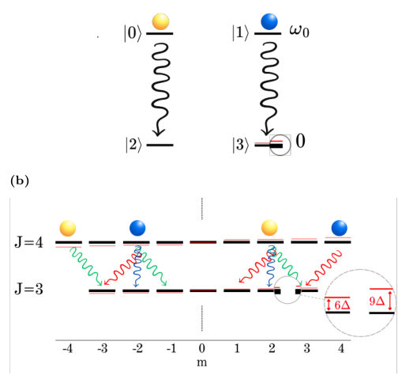
<figcaption class="paper-figure-caption"><b>Fig 1.</b> FIG. 1: (a) The four-level model with the degeneracy-lifting term Δ|3⟩⟨3| and (b) a representative atomic system with the degeneracy-lifting term ∑︀</figcaption>
</figure>
<figure class="paper-figure-card">
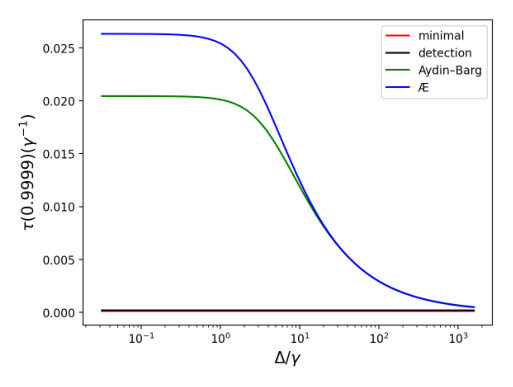
<figcaption class="paper-figure-caption"><b>Fig 2.</b> FIG. 3: Checking time 𝜏(𝐹0) at target fidelity 𝐹0 = 0.9999 as a function of the degeneracy-lifting strength Δ, with ev- ery state decaying at rate 𝛾. At small Δ the checking time saturates at a code-dependent value 𝜏⋆, with 𝜏⋆minimal &lt; 𝜏⋆detection &lt; 𝜏⋆Aydin–Barg &lt; 𝜏⋆Æ. The Æ curve stays above the Aydin–Barg curve until Δ/𝛾≈50, after which Aydin– Barg is marginally ahead.</figcaption>
</figure>
<figure class="paper-figure-card">
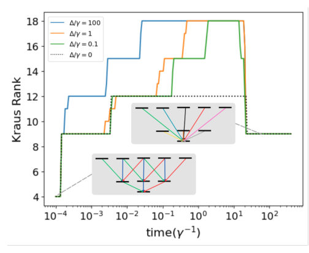
<figcaption class="paper-figure-caption"><b>Fig 3.</b> FIG. 2: Effective Kraus rank versus time for the channel generated by 𝐻𝒮+𝐻Δ and the jump operators 𝐿𝛿with 𝐽≤2, counting Kraus operators with weight above 10−8. The insets sketch the error channel at early and late times, with colors denoting distinct Kraus operators: early Kraus operators have support on several source states, whereas in the long-time limit each maps a single source state to the ground state |0, 0⟩.</figcaption>
</figure>
<figure class="paper-figure-card">
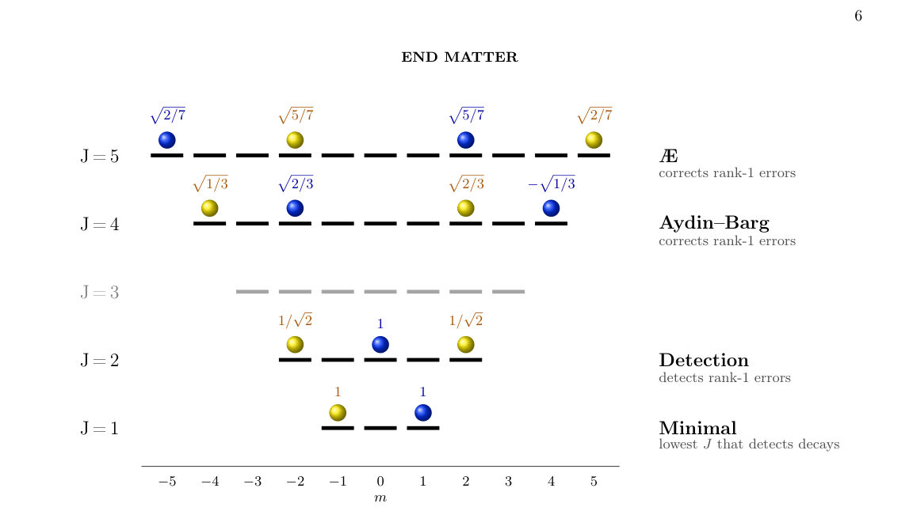
<figcaption class="paper-figure-caption"><b>Fig 4.</b> FIG. 4: Representative encodings used in the numerical comparisons. Each row of black bars is a degenerate angular- momentum manifold 𝐽, and horizontal position gives the magnetic quantum number 𝑚. Yellow and blue spheres mark the basis states supporting |¯0⟩and |¯1⟩, respectively, with their nonzero amplitudes indicated. The minimal and detection encodings serve as baselines, while the Æ and Aydin–Barg codes both correct rank-1 transitions.</figcaption>
</figure>
<figure class="paper-figure-card">
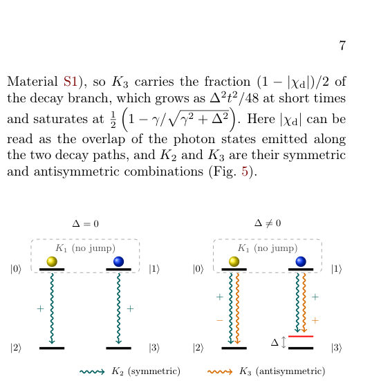
<figcaption class="paper-figure-caption"><b>Fig 5.</b> FIG. 5: Onset of the third Kraus operator in the four-level model. At Δ = 0 the channel has two Kraus operators, the no-jump operator 𝐾1 and a single decay operator 𝐾2 that acts identically on the two decay paths. For Δ ̸= 0 the decay branch splits into the symmetric and antisymmetric combi- nations 𝐾2 and 𝐾3 of the two paths, Eqs. (13) and (14). The signs indicate the relative sign of the two paths in each oper- ator.</figcaption>
</figure>
</div>

<p><strong>Summary.</strong> This paper analyzes the practical limitations of Quantum Error Correction when environmental noise makes error processes distinguishable. Using an atomic model, the authors show that distinguishability degrades fidelity and increases the required checking frequency. They conclude that implementing fast syndrome extraction is essential to maintain robust quantum information processing.</p>
<p><strong>Why it may be interesting.</strong> This work directly addresses a practical limitation in implementing QEC in real physical systems (like atoms), connecting fundamental quantum information theory with the specifics of open quantum dynamics and measurement protocols.</p>
<details>
<summary>Detailed structure</summary>
<p><strong>Main problem.</strong> The paper investigates how the distinguishability of environmental error processes degrades the performance of Quantum Error Correction (QEC) codes.</p>
<p><strong>Main result.</strong> Rapid and frequent syndrome checking is identified as a crucial mechanism to mitigate the buildup of error distinguishability, thereby restoring near-perfect quantum state recovery.</p>
<p><strong>Method.</strong> The analysis uses analytical modeling of fidelity decay, calculating state-level and channel-level fidelities, and deriving scaling laws for the required syndrome checking time.</p>
<p><strong>Model / system.</strong> The study employs an analytically solvable four-level model, representing atomic and molecular angular-momentum systems subjected to spontaneous-emission noise.</p>
<p><strong>Key observables.</strong> Branch-averaged decoded state fidelity ($F_\psi$), transpose fidelity ($F_{	ext{tr}}$), and the required syndrome checking time ($ au$).</p>
<p><strong>Important parameters / regimes.</strong> Degeneracy-lifting strength ($\Delta$), spontaneous emission rate ($\gamma$), and the target fidelity ($F_0$).</p>
<p><strong>Assumptions / limitations.</strong> The analysis assumes the validity of the Lindblad master equation formalism and focuses on the regime where rapid syndrome checking can counteract distinguishability buildup.</p>
<p><strong>Figures summary.</strong> Figures illustrate the four-level model, the evolution of the effective Kraus rank over time, and the dependence of the required checking time ($  au$) on the distinguishability parameter ($\Delta$) for various QEC codes.</p>
<p><strong>Paper structure.</strong> The paper progresses by first establishing the physical model (four-level system, spontaneous emission), quantifying the impact of distinguishability ($\Delta$) on error channels (increasing Kraus rank), and finally deriving the necessary condition (fast syndrome extraction) to maintain high fidelity over time.</p>
</details>
<details>
<summary>Abstract</summary>
<p>Quantum error-correcting codes require that the environment cannot distinguish relevant error processes acting on different codewords. In practice, residual Zeeman, Stark, or anharmonic interactions shift the underlying states, making errors distinguishable and weakening the conditions for perfect recovery. We study this effect with an analytically solvable four-level model and a canonical spontaneous-emission noise model for atoms and molecules. Distinguishability raises the effective Kraus rank of the noise channel, lowers the recovered fidelity, and sets an operational checking time that shortens as the frequency separation between the emitted photons increases. We find that rapid syndrome checking suppresses the buildup of distinguishability and quantify how fast one needs to check to restore near-perfect recovery. Error distinguishability is thus a practical limitation of monolithic error correction, and our analysis identifies fast syndrome extraction as a route to mitigating it.</p>
</details>
<p><sub><a href="#top">↑ back to top</a></sub></p>

<p><a id="paper-2609.27983"></a></p>
<h3 id="optical-schrodinger-cat-states-generated-using-cavity-rydberg-quantum-photonics"><a href="http://arxiv.org/abs/2609.27983v1">Optical Schrödinger cat states generated using cavity Rydberg quantum photonics</a></h3>
<p><strong>Authors:</strong> Hendrik Hegels, Mae Eichenberger, Gerhard Rempe, Stephan Dürr<br>
<strong>Type:</strong> both · <strong>Category:</strong> other · <strong>PDF:</strong> <a href="https://arxiv.org/pdf/2609.27983v1">https://arxiv.org/pdf/2609.27983v1</a><br>
<strong>Analysis basis:</strong> full PDF text, analyzed in chunks
<strong>Topic relevance:</strong> 🔥 <code>quantum optics experiment</code> <strong>4/5</strong> · <code>QC/QI experiment</code> <strong>3/5</strong> · <code>Tavis-Cummings &amp; cavity-many-emitter</code> <strong>3/5</strong> · <code>analog quantum simulation</code> <strong>3/5</strong> · <code>Rydberg arrays</code> <strong>2/5</strong> · <code>driven-dissipative phase transition</code> <strong>2/5</strong> · <code>correlated / nonlocal dissipation</code> <strong>1/5</strong> · <code>interference shaping light</code> <strong>1/5</strong> · <code>methods for driven-dissipative</code> <strong>1/5</strong> · <code>quantum measurements</code> <strong>1/5</strong></p>
<div class="figure-strip-hint">↔ Scroll figures horizontally</div>
<div class="paper-figures-scroll">
<figure class="paper-figure-card">
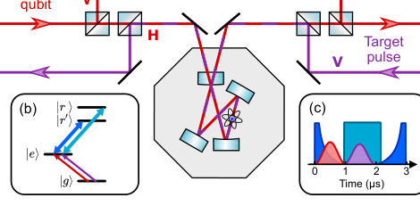
<figcaption class="paper-figure-caption"><b>Fig 1.</b> FIG. 1. (a) Scheme of the cat-state generation. A polar- ization qubit carried by the control photon (red) is converted into a dual-rail qubit by a polarizing beam splitter (PBS, blue square). In one rail the photon is stored as a Rydberg excita- tion inside the cavity, in the other rail the photon bypasses the cavity. Next, the target light pulse (purple) enters the setup and experiences a conditional π phase shift upon reflection off the cavity. Subsequently, the control photon is retrieved and overlapped with the bypass on another PBS. An optical fiber in the bypass matches the delay resulting from storage. The vacuum chamber is represented by the octagon. The scheme is simplified for...</figcaption>
</figure>
<figure class="paper-figure-card">
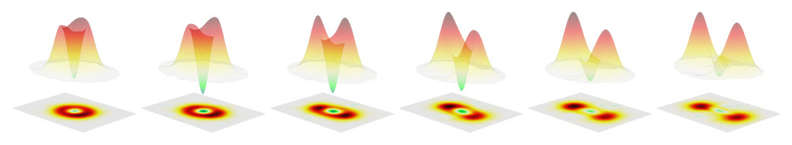
<figcaption class="paper-figure-caption"><b>Fig 2.</b> FIG. 2. Wigner functions of odd cat states of six different sizes. The data are not corrected for detection loss. All Wigner functions have negative regions (green), thus featuring a nonclassical property. The loss-corrected cat size increases from left (α2 g = 0.18) to right (α2 g = 2.4).</figcaption>
</figure>
<figure class="paper-figure-card">
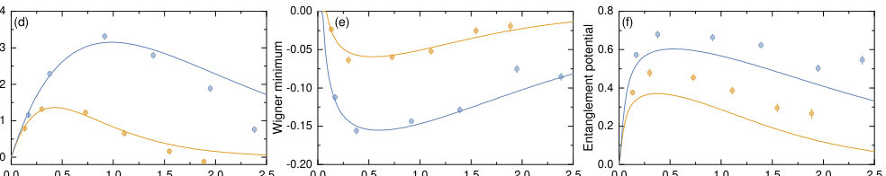
<figcaption class="paper-figure-caption"><b>Fig 3.</b> FIG. 3. Cat-state properties. (a) The fidelities Fpure (Fmix) between the measured HES and the pure (mixed) best-fit HES show that the dominant limitation in the cat-state generation is a reduced visibility V . (b) The dependence of V on α2 eff agrees well with a model that assumes that loss of target photons is the dominant experimental imperfection. The Bell-state fidelity (a) and the negativity (c) show that the HES is entangled. (d) The macroscopicity measures how macroscopic the superposition in the HES is. If the minimum of the Wigner function (e) is negative or if the entanglement potential (f) is nonzero, then the odd CSS is nonclassical.</figcaption>
</figure>
</div>

<p><strong>Summary.</strong> This paper reports on the generation of large optical Schrödinger cat states using cavity Rydberg quantum photonics. The authors achieved a record state size while rigorously characterizing the state's entanglement and nonclassicality through quantum state tomography. They also provide a deep theoretical analysis of loss mechanisms, offering pathways to improve state fidelity for quantum information applications.</p>
<p><strong>Why it may be interesting.</strong> This work is highly relevant as it pushes the boundaries of quantum state generation in cavity QED platforms, directly addressing decoherence and scaling challenges critical for quantum information processing.</p>
<details>
<summary>Detailed structure</summary>
<p><strong>Main problem.</strong> The primary goal is to generate and characterize high-size hybrid entangled states (HESs) of optical photons, specifically Schrödinger cat states, using a novel quantum platform.</p>
<p><strong>Main result.</strong> The authors achieved a world-record size for these optical HESs, reaching $|\alpha|^2 = 2.4$, while also providing detailed theoretical and experimental analysis of the decoherence mechanisms limiting state fidelity.</p>
<p><strong>Method.</strong> The work combines quantum state tomography and fidelity measurements on the generated states with detailed theoretical modeling of photon loss mechanisms in the cavity system.</p>
<p><strong>Model / system.</strong> The system utilizes cavity Rydberg quantum photonics, employing Rydberg Electromagnetically Induced Transparency (EIT) to generate entanglement between a superposition of two coherent states and a polarization qubit.</p>
<p><strong>Key observables.</strong> Uhlmann fidelity ($F_{	ext{mix}}$), Negativity ($N$), Lee-Jeong macroscopicity ($I$), and the effective cat state size ($\alpha^2$).</p>
<p><strong>Important parameters / regimes.</strong> Decoherence rates, blockade parameters ($C, \Lambda_V$), and interaction times ($t_t$).</p>
<p><strong>Assumptions / limitations.</strong> The analysis relies on modeling photon loss due to cavity and mirror imperfections, and later assumes specific functional forms for the optimal homodyne measurement mode function.</p>
<p><strong>Figures summary.</strong> Figures show Wigner functions demonstrating increasing cat state size up to $\alpha^2=2.4$, and subsequent figures analyze fidelities, visibility dependence, and entanglement measures derived from tomography.</p>
<p><strong>Paper structure.</strong> The paper progresses from demonstrating the generation and measurement of large HESs (state tomography) to quantifying the limitations imposed by decoherence (fitting visibility vs. size) and finally to a detailed theoretical analysis of minimizing total loss ($L_g$) by optimizing measurement modes and operational parameters.</p>
</details>
<details>
<summary>Abstract</summary>
<p>We introduce cavity Rydberg quantum photonics as a novel platform for generating hybrid entangled states of optical photons. The system achieves world-record sizes of these states and has the potential to produce yet larger states in the future. In the hybrid entangled state produced here, a superposition of two coherent states is entangled with a polarization qubit carried by a photon in another beam path. We perform quantum state tomography of this hybrid entangled state and evaluate various key properties. By optimizing the decoherence we increase the size compared to previous hybrid entangled states, reaching a size of $α^2= 2.4$. Besides the fundamental interest in Schrödinger cat states, this work is interesting because of potential applications in the field of quantum information processing.</p>
</details>
<p><sub><a href="#top">↑ back to top</a></sub></p>

<p><a id="paper-2609.26941"></a></p>
<h3 id="measurement-only-dynamical-phase-transitions-in-spin-1-chains"><a href="http://arxiv.org/abs/2609.26941v1">Measurement-Only Dynamical Phase Transitions in Spin-1 Chains</a></h3>
<p><strong>Authors:</strong> Kemal Aziz, Haining Pan, J. H. Pixley<br>
<strong>Type:</strong> theory · <strong>Category:</strong> statistical mechanics · <strong>PDF:</strong> <a href="https://arxiv.org/pdf/2609.26941v1">https://arxiv.org/pdf/2609.26941v1</a><br>
<strong>Analysis basis:</strong> full PDF text, analyzed in chunks
<strong>Topic relevance:</strong> 🔥 <code>driven-dissipative phase transition</code> <strong>4/5</strong> · 🔥 <code>quantum measurements</code> <strong>4/5</strong> · <code>analog quantum simulation</code> <strong>3/5</strong> · <code>methods for driven-dissipative</code> <strong>3/5</strong> · <code>non-equilibrium universality</code> <strong>3/5</strong> · <code>correlated / nonlocal dissipation</code> <strong>2/5</strong></p>
<div class="figure-strip-hint">↔ Scroll figures horizontally</div>
<div class="paper-figures-scroll">
<figure class="paper-figure-card">
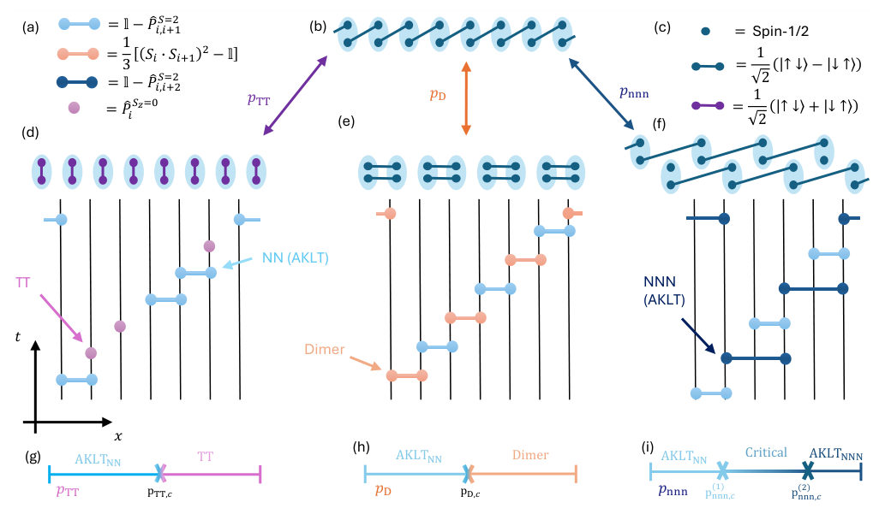
<figcaption class="paper-figure-caption"><b>Fig 1.</b> FIG. 1. Overview of the measurement-only spin-1 protocols. (a) Local projectors used in the three protocols: the NN AKLT projector (light blue), dimer VBS projector (orange), NNN AKLT projector (dark blue), and single-site Sz i = 0 projector (purple). (b) Virtual-spin construction of the NN AKLT state. The solid points denote virtual spin-1/2 degrees of freedom paired into singlets; the ovals project each pair of virtual spins onto the physical spin-1 subspace. (c) Conventions for the virtual spin-1/2 degrees of freedom and their singlet and Sz = 0 triplet pairings. (d) Circuit diagram of the SPT-to-TT model. For each qutrit i, the single-site Sz i = 0 projector is applied on i with...</figcaption>
</figure>
<figure class="paper-figure-card">
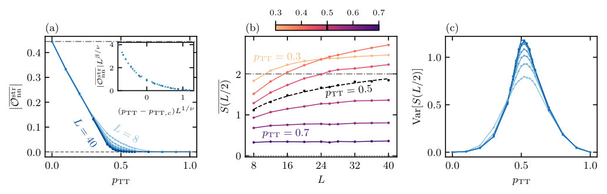
<figcaption class="paper-figure-caption"><b>Fig 2.</b> FIG. 2. Data are shown for the SPT–TT model depicted in Fig. 1(d), where the TT projector is applied with probability pTT and the NN AKLT projector with probability 1 −pTT. (a) Ostr nn , defined in Eq. (22), as a function of pTT for available even system sizes up to L = 40. The overline denotes averaging over circuits. The MIPT location pTT,c = 0.50(1), correlation-length exponent ν = 1.4(2), and order-parameter exponent β = 2.0(3) are obtained from the finite-size scaling collapse in the inset following Eq. (19). The horizontal reference lines mark the analytic limiting values of the NN string order parameter: |Ostr nn | = 0 in the TT product-state limit and |Ostr nn | = 4/9 in the NN AKLT...</figcaption>
</figure>
<figure class="paper-figure-card">
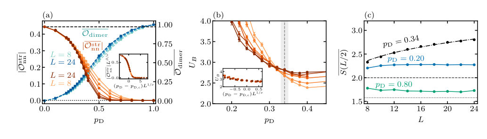
<figcaption class="paper-figure-caption"><b>Fig 3.</b> FIG. 3. Data are shown for the SPT–dimer model depicted in Fig. 1(e), where the dimer projector is applied on odd bonds with probability pD and the NN AKLT projector with probability 1 −pD. (a) Ostr nn , defined in Eq. (22), and Odimer, defined in Eq. (25), as functions of pD for L ∈{8, 10, 12, 16, 20, 24}. The overline denotes averaging over circuits. The horizontal reference lines mark the analytic limiting values of the two order parameters. The inset in panel (a) shows a finite-size scaling collapse of Ostr nn following Eq. (19), yielding pD,c = 0.34(1), ν = 1.3(2), and β = 0.22(3). (b) Centered Binder cumulant UB, defined in Eq. (26), for the dimer order parameter as a function of pD....</figcaption>
</figure>
<figure class="paper-figure-card">
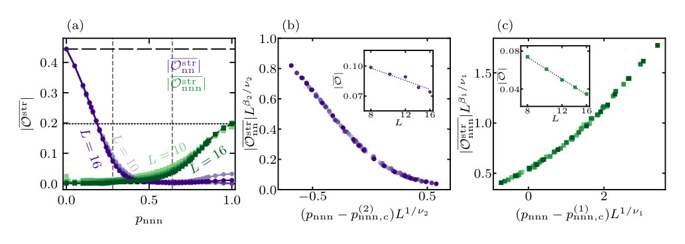
<figcaption class="paper-figure-caption"><b>Fig 4.</b> FIG. 4. Data are shown for the NN–NNN AKLT model as depicted in Fig. 1(f), where the NNN AKLT projector is applied with probability pnnn and the NN AKLT projector with probability 1 −pnnn. Order-parameter diagnostics for the NN–NNN AKLT statevector transition are shown for L ∈{8, 10, 12, 14, 16}. (a) Global view of |Ostr nn | and |Ostr nnn| as functions of pnnn. The NN AKLT Haldane SPT and topologically trivial NNN AKLT regimes are separated by an intermediate interval in which both measured string order parameters vanish. The entanglement scaling in Fig. 6 supports the identification of this interval as an extended critical regime. Horizontal reference lines mark the analytic limiting...</figcaption>
</figure>
<figure class="paper-figure-card">
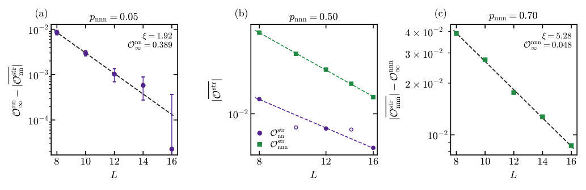
<figcaption class="paper-figure-caption"><b>Fig 5.</b> FIG. 5. Finite-size decay of the string order parameters across the NN–NNN AKLT phase diagram. (a) In the NN AKLT phase at pnnn = 0.05, the correction to the nonzero NN string order plateau decays exponentially, Onn ∞−|Ostr nn | ∝e−L/ξ, with ξ = 1.92 and Onn ∞= 0.389. (b) At the representative critical-phase point pnnn = 0.50, the NN and NNN string order parameters are shown with separate power-law fits |Ostr α | ∝L−ηα. Filled and open NN markers distinguish the two L mod 4 branches, and the NN fit uses the filled-marker branch. The same algebraic decay is observed at representative points throughout the intermediate critical phase, as shown in Fig. 13 of Appendix F. (c) In the NNN AKLT...</figcaption>
</figure>
</div>

<p><strong>Summary.</strong> This paper explores how measurement-only dynamics can induce phase transitions in an interacting spin-1 chain, moving beyond standard unitary evolution. By competing local projectors, the system is shown to transition between topologically distinct phases, characterized by measurable order parameters and entanglement scaling. It provides a powerful tool for studying non-equilibrium quantum matter.</p>
<p><strong>Why it may be interesting.</strong> This work provides a concrete, measurable framework for understanding how non-unitary, measurement-induced dynamics can stabilize or transition between distinct topological and valence-bond-solid orders in quantum magnets.</p>
<details>
<summary>Detailed structure</summary>
<p><strong>Main problem.</strong> The study investigates dynamical phase transitions occurring in an interacting spin-1 chain driven solely by sequential, forced local measurements rather than standard unitary evolution.</p>
<p><strong>Main result.</strong> Competing local projectors can drive the system through three distinct dynamical phases—a trivial product state, a dimerized VBS state, and an NNN AKLT state—with evidence suggesting intervening extended critical regimes.</p>
<p><strong>Method.</strong> The analysis employs matrix product state (MPS) simulations and exact statevector calculations to track the evolution under forced local projections, supplemented by finite-size scaling analysis.</p>
<p><strong>Model / system.</strong> The system is a spin-1 chain, starting from the nearest-neighbor (NN) Affleck-Kennedy-Lieb-Tasaki (AKLT) Haldane symmetry-protected topological (SPT) state. The dynamics are governed by the competition between projectors corresponding to NN AKLT, Dimer VBS, and NNN AKLT interactions.</p>
<p><strong>Key observables.</strong> Nonlocal string order parameters, local dimer order, entanglement scaling, and the MPS bond dimension ($\chi$).</p>
<p><strong>Important parameters / regimes.</strong> The relative strengths/probabilities of the competing local projectors (e.g., $p_{	ext{nnn},c} \simeq 0.28$ and $p_{	ext{nnn},c} \simeq 0.64$).</p>
<p><strong>Assumptions / limitations.</strong> The dynamics are modeled using forced, normalized local projections, which bypass the constraints of unitary evolution, and the analysis relies on specific transfer-matrix identities for observables.</p>
<p><strong>Figures summary.</strong> Figures illustrate the three competing projector protocols (NN AKLT, Dimer, NNN AKLT) and show objective landscapes for statevector collapses and the time evolution of entanglement entropy in different phases.</p>
<p><strong>Paper structure.</strong> The paper systematically analyzes the effect of competing local projectors on the spin-1 chain, characterizing the resulting dynamical phases using multiple order parameters and performing finite-size scaling to locate critical points.</p>
</details>
<details>
<summary>Abstract</summary>
<p>We study measurement-only dynamics in an interacting spin-1 chain, using forced, normalized local projections rather than Born-rule-sampled measurement outcomes. Starting from the nearest-neighbor (NN) Affleck-Kennedy-Lieb-Tasaki (AKLT) Haldane symmetry-protected topological state, we show that competing local projectors drive this order toward three distinct dynamical phases: a featureless topologically trivial product state, an explicitly dimerized valence-bond-solid state, and a topologically trivial next-nearest-neighbor (NNN) AKLT state consisting of two interwoven Haldane chains. Using matrix product state and exact statevector simulations, we identify continuous transitions among these phases and characterize them using nonlocal string order parameters, local dimer order, and entanglement scaling. For the NN-NNN AKLT model, finite-size signatures are consistent with an intervening extended critical regime rather than a single direct transition. These results extend studies of monitored topology to a bosonic SPT and show that local projections can control both topological and valence-bond-solid order.</p>
</details>
<p><sub><a href="#top">↑ back to top</a></sub></p>

<p><a id="paper-2609.28180"></a></p>
<h3 id="quantum-dynamics-of-spinful-impurity-in-ideal-bose-gas"><a href="http://arxiv.org/abs/2609.28180v1">Quantum dynamics of spinful impurity in ideal Bose gas</a></h3>
<p><strong>Authors:</strong> O. Hryhorchak, V. Pastukhov<br>
<strong>Type:</strong> theory · <strong>Category:</strong> quantum gases · <strong>PDF:</strong> <a href="https://arxiv.org/pdf/2609.28180v1">https://arxiv.org/pdf/2609.28180v1</a><br>
<strong>Analysis basis:</strong> full PDF text, analyzed in chunks
<strong>Topic relevance:</strong> 🔥 <code>Keldysh / 2PI / non-Gaussian methods</code> <strong>4/5</strong> · <code>analog quantum simulation</code> <strong>3/5</strong> · <code>methods for driven-dissipative</code> <strong>3/5</strong> · <code>non-equilibrium universality</code> <strong>3/5</strong> · <code>scars &amp; prethermalization</code> <strong>3/5</strong> · <code>correlated / nonlocal dissipation</code> <strong>1/5</strong> · <code>driven-dissipative phase transition</code> <strong>1/5</strong> · <code>quantum measurements</code> <strong>1/5</strong></p>
<div class="figure-strip-hint">↔ Scroll figures horizontally</div>
<div class="paper-figures-scroll">
<figure class="paper-figure-card">
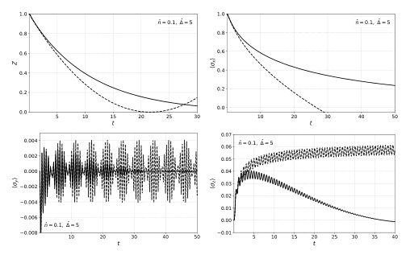
<figcaption class="paper-figure-caption"><b>Fig 1.</b> FIG. 3: Same density of the system as in Fig. 1 but at larger Rabi coupling ˆ∆= 5.</figcaption>
</figure>
<figure class="paper-figure-card">
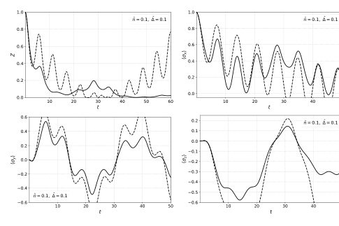
<figcaption class="paper-figure-caption"><b>Fig 2.</b> FIG. 1: Time dependence of the modulus squared wave- function overlap Z(t) and average spin components ⟨σα⟩for set of parameters ˆn = 0.1 and ˆ∆= 0.1 (see text). Solid lines correspond to our mean-field-like approach, while dashed lines represent the linear in density of bosons expansion of the ex- act result.</figcaption>
</figure>
<figure class="paper-figure-card">
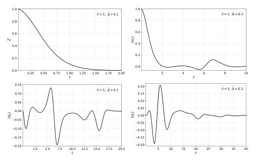
<figcaption class="paper-figure-caption"><b>Fig 3.</b> FIG. 4: Impurity observables for dimensionless coupling ˆn = 1 and Rabi field ˆ∆= 0.1.</figcaption>
</figure>
<figure class="paper-figure-card">
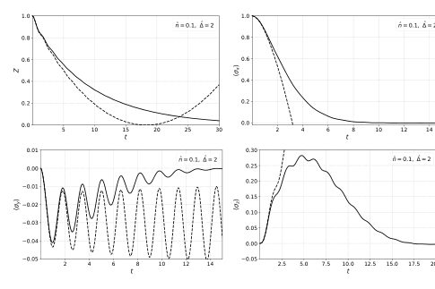
<figcaption class="paper-figure-caption"><b>Fig 4.</b> FIG. 2: Same as in Fig. 1 but for another set of parameters ˆn = 0.1 and ˆ∆= 2.</figcaption>
</figure>
<figure class="paper-figure-card">
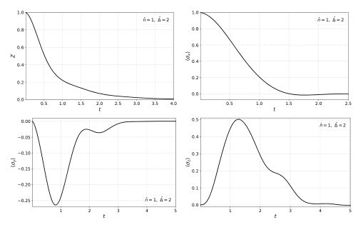
<figcaption class="paper-figure-caption"><b>Fig 5.</b> FIG. 5: Same density of the system as in Fig. 4 and resonant Rabi coupling ˆ∆= 2.</figcaption>
</figure>
</div>

<p><strong>Summary.</strong> This theoretical study analyzes how a spinful impurity interacts with a Bose-Einstein condensate after a sudden change (quench). By developing an advanced mean-field approximation, the authors calculate the spin's decoherence dynamics, showing that their method provides a significant improvement over existing theoretical models.</p>
<p><strong>Why it may be interesting.</strong> This work directly addresses non-equilibrium dynamics and decoherence in quantum many-body systems, which is central to understanding quantum thermalization in ultracold atomic settings.</p>
<details>
<summary>Detailed structure</summary>
<p><strong>Main problem.</strong> The paper investigates the non-equilibrium quantum dynamics of a single spinful impurity immersed in an ideal Bose gas following a quench.</p>
<p><strong>Main result.</strong> The authors predict a substantial speed-up in the decoherence (thermalization) dynamics of the impurity's spin degree of freedom compared to previous theoretical ansatze.</p>
<p><strong>Method.</strong> The analysis employs an original mean-field-like approximation, utilizing Green's function formalism and variational techniques to calculate time-dependent expectation values.</p>
<p><strong>Model / system.</strong> The system consists of a spin-$rac{1}{2}$ impurity interacting via a spin-dependent contact potential with a bath of non-interacting 2D or 3D bosons, subjected to a transverse Rabi field.</p>
<p><strong>Key observables.</strong> Time-dependent average impurity spin components ($\langle\sigma_\alpha
angle$) and the wave function overlap between initial and time-evolved states ($Z(t)$).</p>
<p><strong>Important parameters / regimes.</strong> Boson-impurity coupling strengths ($\hat{n}$), Rabi coupling strength ($\hat{\Delta}$), and dimensionality (2D vs 3D).</p>
<p><strong>Assumptions / limitations.</strong> The primary approximation is a mean-field-like treatment that neglects higher-order boson-boson interaction terms, though it is shown to be more accurate than simpler linear approximations.</p>
<p><strong>Figures summary.</strong> Figures illustrate the divergence of the mean-field result from simpler linear approximations at late times, and show the time evolution of spin observables for varying coupling strengths and Rabi fields in both 2D and 3D.</p>
<p><strong>Paper structure.</strong> The paper builds from the single-boson limit calculation using T-matrix methods to a full many-body treatment using a mean-field ansatz, comparing results against known limits and previous approximations.</p>
</details>
<details>
<summary>Abstract</summary>
<p>We discuss the quench dynamics of an isolated system composed of a single spinful impurity in the transverse Rabi field and bath of non-interacting three- and two-dimensional bosons. Specifically, we consider the evolution of bosons and a spin-$\frac{1}{2}$ particle, initially prepared in a Bose-Einstein condensate state and a magnetic ground state, respectively, with the spin-dependent contact boson-impurity interaction switched on. Applying an original mean-field-like approximation, which naturally reflects the statistical effects of the bosonic bath, we calculate time-dependent components of the average impurity spin and the overlap of the wave function between initial and arbitrary time moments. A key prediction is a substantial speed-up in the decoherence (thermalization) dynamics of the spin degree of freedom compared to results obtained with the Chevy-like ansatz.</p>
</details>
<p><sub><a href="#top">↑ back to top</a></sub></p>

<p><a id="paper-2609.28148"></a></p>
<h3 id="universal-splitting-of-nonequilibrium-phase-transitions-in-driven-potts-heat-engines"><a href="http://arxiv.org/abs/2609.28148v1">Universal splitting of nonequilibrium phase transitions in driven Potts heat engines</a></h3>
<p><strong>Authors:</strong> Vitória T. Henkes, Gustavo A. L. Forão, Andre C. Barato, Carlos E. Fiore<br>
<strong>Type:</strong> theory · <strong>Category:</strong> statistical mechanics · <strong>PDF:</strong> <a href="https://arxiv.org/pdf/2609.28148v1">https://arxiv.org/pdf/2609.28148v1</a><br>
<strong>Analysis basis:</strong> full PDF text, analyzed in chunks
<strong>Topic relevance:</strong> 🔥 <code>driven-dissipative phase transition</code> <strong>4/5</strong> · <code>methods for driven-dissipative</code> <strong>3/5</strong> · <code>non-equilibrium universality</code> <strong>3/5</strong> · <code>Keldysh / 2PI / non-Gaussian methods</code> <strong>2/5</strong> · <code>analog quantum simulation</code> <strong>2/5</strong> · <code>correlated / nonlocal dissipation</code> <strong>2/5</strong> · <code>Frenkel-Kontorova</code> <strong>1/5</strong> · <code>quantum measurements</code> <strong>1/5</strong></p>
<div class="figure-strip-hint">↔ Scroll figures horizontally</div>
<div class="paper-figures-scroll">
<figure class="paper-figure-card">
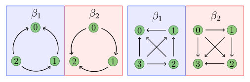
<figcaption class="paper-figure-caption"><b>Fig 1.</b> FIG. 1. Schematics of the driving forces. Small green circles denote the unit states si, and arrows indicate the favored direction, i.e. d(ν) s′s &gt; 0, of the driving force for q = 3 (left) and q = 4 (right). The driving favors higher (lower) states due to the contact with the hot (cold) thermal reservoir.</figcaption>
</figure>
<figure class="paper-figure-card">
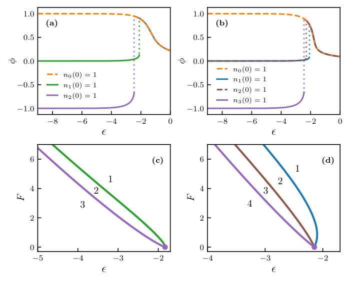
<figcaption class="paper-figure-caption"><b>Fig 2.</b> FIG. 2. Main results of the phase transitions for MF interactions for q = 3 and q = 4. For F = 1, panels (a) and (b) depict the order parameter ϕ for q = 3 and q = 4, respectively, and different initial conditions nα(0) (α ∈{0, .., q −1}). Panels (c) and (d) show the corresponding phase diagrams, where 1, 2, 3 and 4 denote the number of stable fixed points in that phase, and lines denote the discontinuous transitions. Parameters: β1 = 2 and β2 = 1.</figcaption>
</figure>
<figure class="paper-figure-card">
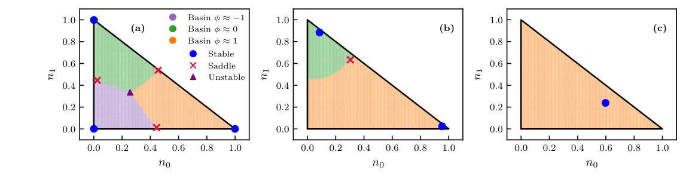
<figcaption class="paper-figure-caption"><b>Fig 3.</b> FIG. 3. Basin of attraction for the fixed points for q = 3. Each panel represent a phase, with (a) ϵ = −5, (b) ϵ = −2.3 and (c) ϵ = −1. Parameters: F = 1, β1 = 2 and β2 = 1.</figcaption>
</figure>
<figure class="paper-figure-card">
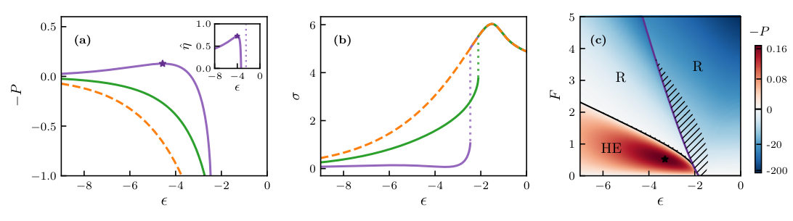
<figcaption class="paper-figure-caption"><b>Fig 4.</b> FIG. 4. Main results of the thermodynamics for MF interactions for q = 3. Panels (a) and (b) show the depiction of the mean power −P and of the entropy productions per unit σ, respectively, versus ϵ for F = 1 Inset: the scaled efficiency ˆη = η/ηc. Curves label are the same as in Fig. 2. Panel (c) show the power heat-map for n2(0) = 1 where HE and R denote, respectively, the heat-engine and the refrigerator regimes. The hatched region indicate the dud regime. The symbol ⋆denotes the simultaneous maximization of −P with respect to F and ϵ. The purple continuous line indicate the phase transition as in Fig. 2(c). Parameters: β1 = 2 and β2 = 1.</figcaption>
</figure>
<figure class="paper-figure-card">
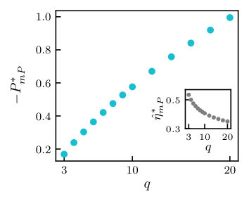
<figcaption class="paper-figure-caption"><b>Fig 5.</b> FIG. 5. The dependence of maximal power −P∗ mP with q. Inset: The same but for ˆη∗ mP. Parameters: β1 = 2 and β2 = 1.</figcaption>
</figure>
</div>

<p><strong>Summary.</strong> This work analyzes a driven Potts model acting as a heat engine, revealing that the interplay between multi-state interactions, external driving, and thermal bias generates a rich phase structure. The authors demonstrate that the ordered phase splits into multiple distinct phases, and they derive analytical and numerical results characterizing the system's ability to perform work as a heat engine.</p>
<p><strong>Why it may be interesting.</strong> The study provides a concrete, solvable model (Potts model) to explore complex non-equilibrium phenomena like phase transition splitting and energy conversion (heat engines) driven by external fields, which has parallels in open quantum systems dynamics.</p>
<details>
<summary>Detailed structure</summary>
<p><strong>Main problem.</strong> The paper investigates the nonequilibrium phase transitions and thermodynamic properties of a driven Potts model coupled to two thermal reservoirs.</p>
<p><strong>Main result.</strong> The driving mechanism causes the ordered phase to split into multiple distinct phases, leading to $q-1$ observable transitions, and the system can operate as a collective heat engine.</p>
<p><strong>Method.</strong> The study employs both mean-field (MF) analytical techniques and numerical simulations (Gillespie algorithm) to analyze the steady-state dynamics.</p>
<p><strong>Model / system.</strong> The system is a driven Potts model with $q$ discrete states, interacting units, and coupled to two heat baths at different temperatures. The dynamics are governed by transition rates derived from the energy landscape and external driving forces.</p>
<p><strong>Key observables.</strong> Power, heat currents ($Q_
u$), efficiency ($\eta$), order parameter ($\phi$), and steady-state occupation densities ($n_{st\alpha}$).</p>
<p><strong>Important parameters / regimes.</strong> Interaction strength ($\epsilon$), number of states ($q$), temperature difference ($eta_1, eta_2$), and the driving force ($F$).</p>
<p><strong>Assumptions / limitations.</strong> The analysis relies on the mean-field approximation for one set of results and a strong ordering limit for analytical derivations in the MF case.</p>
<p><strong>Figures summary.</strong> Figures illustrate phase transitions for $q=3, 4$ in the MF model, map power and entropy production regimes, and compare numerical vs. MF predictions for power and efficiency.</p>
<p><strong>Paper structure.</strong> The paper progresses from defining the driven Potts model and its coupling to two baths, through analyzing the phase splitting and heat engine operation using MF theory, and finally confirming these results using 2D lattice simulations and developing analytical approximations in the strongly ordered limit.</p>
</details>
<details>
<summary>Abstract</summary>
<p>We investigate nonequilibrium phase transitions and thermodynamic properties of driven Potts models coupled to two thermal reservoirs at different temperatures. The interplay with the multi-state structure of the Potts model leads to distinct phase-transition scenarios. The proposed driving scheme breaks the symmetry between the Potts states and gives rise to multiple transitions within the ordered phases, where the phases are characterized by different numbers of stable fixed points. This number can vary from $q$ fixed points to $1$ fixed point, corresponding to $q-1$ distinct transitions. The driving scheme strongly affects the thermodynamic operation regimes, allowing the system to operate as a heat engine. We demonstrate that these phenomena persist for both a mean-field (MF) model and a two-dimensional model, confirming the robustness of the results with respect to dimensionality. For the MF case, we also develop a phenomenological description in the strongly ordered regime that yields analytical expressions for the power, heat currents, and efficiency. Our results show how multi-state collective interactions, nonequilibrium driving, and thermal bias jointly generate a rich phase structure and the emergence of a collective heat engine.</p>
</details>
<p><sub><a href="#top">↑ back to top</a></sub></p>

<p><a id="paper-2609.26949"></a></p>
<h3 id="measurement-based-feedback-as-a-flexible-tool-to-control-non-poissonian-photon-statistics"><a href="http://arxiv.org/abs/2609.26949v1">Measurement-based feedback as a flexible tool to control non-Poissonian photon statistics</a></h3>
<p><strong>Authors:</strong> Ming Li, JunYan Luo, Georg Engelhardt<br>
<strong>Type:</strong> theory · <strong>Category:</strong> other · <strong>PDF:</strong> <a href="https://arxiv.org/pdf/2609.26949v1">https://arxiv.org/pdf/2609.26949v1</a><br>
<strong>Analysis basis:</strong> full PDF text, analyzed in chunks
<strong>Topic relevance:</strong> 🔥 <code>Full counting statistics</code> <strong>4/5</strong> · 🔥 <code>quantum measurements</code> <strong>4/5</strong> · <code>driven-dissipative phase transition</code> <strong>2/5</strong> · <code>methods for driven-dissipative</code> <strong>2/5</strong> · <code>analog quantum simulation</code> <strong>1/5</strong> · <code>correlated / nonlocal dissipation</code> <strong>1/5</strong> · <code>non-equilibrium universality</code> <strong>1/5</strong> · <code>quantum optics experiment</code> <strong>1/5</strong></p>
<div class="figure-strip-hint">↔ Scroll figures horizontally</div>
<div class="paper-figures-scroll">
<figure class="paper-figure-card">
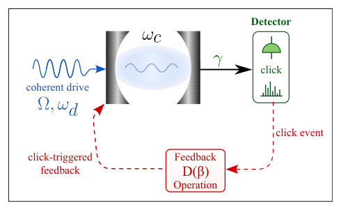
<figcaption class="paper-figure-caption"><b>Fig 1.</b> FIG. 1. Schematic of a coherently driven cavity under measurement-based feedback. Photons emitted from the cav- ity are monitored by a detector, and each detection event trig- gers a feedback displacement ˆD(β) of the intracavity field.</figcaption>
</figure>
<figure class="paper-figure-card">
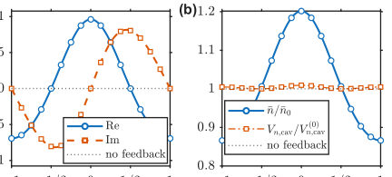
<figcaption class="paper-figure-caption"><b>Fig 2.</b> FIG. 2. Stationary cavity response to click-triggered feed- back. (a) Normalized feedback-induced shift of the station- ary cavity amplitude, δα/|α0|. Symbols show the exact stationary-state results, while lines show the mean-field pre- diction. (b) Mean intracavity photon number ¯n/¯n0 and nor- malized photon-number variance Vn,cav/V (0) n,cav as functions of the feedback phase ∆Φ. For ¯n/¯n0, symbols denote exact re- sults and the solid line is the mean-field prediction; the dash- dotted line connecting the variance data is a guide to the eye. The dotted horizontal lines indicate the corresponding no-feedback references.</figcaption>
</figure>
<figure class="paper-figure-card">
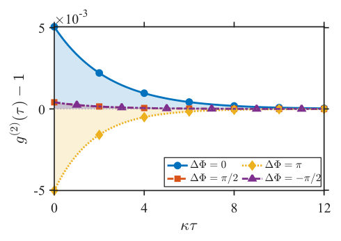
<figcaption class="paper-figure-caption"><b>Fig 3.</b> FIG. 3. Post-click photon correlations g(2)(τ) −1 for rep- resentative feedback phases. The response is positive near ∆Φ = 0, negative near ∆Φ = π, and strongly suppressed at ∆Φ = ±π/2. The shaded areas indicate the integrated corre- lation response that determines the Mandel parameter.</figcaption>
</figure>
<figure class="paper-figure-card">
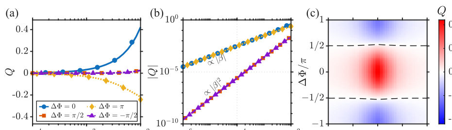
<figcaption class="paper-figure-caption"><b>Fig 4.</b> FIG. 4. Phase dependence and weak-feedback scaling of the measurement noise. (a) Mandel parameter Q as a function of the feedback amplitude |β| for representative feedback phases. (b) Log–log plot of |Q| versus |β|, showing linear scaling at generic phases and quadratic scaling at the specific phases ∆Φ = ±π/2. Lines show the second-order analytical results, while markers denote the numerical full-counting-statistics results. (c) Mandel parameter Q in the (∆/γ, ∆Φ/π) plane at fixed feedback amplitude |β| = 10−2. The dashed curves mark the Q = 0 boundaries separating the super- and sub-Poissonian counting regimes.</figcaption>
</figure>
<figure class="paper-figure-card">
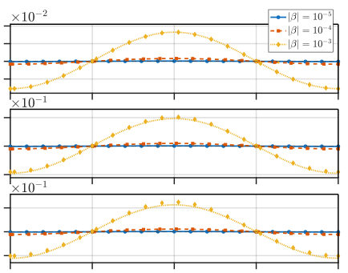
<figcaption class="paper-figure-caption"><b>Fig 5.</b> FIG. 5. Higher-order cumulants of the photon emission as a function of the feedback phase ∆Φ for several feedback amplitudes. The Mandel parameter Q and the higher-order deviations Q3 and Q4 exhibit the same overall phase depen- dence. Markers denote the numerical full-counting-statistics results, while lines show the weak-feedback analytical predic- tions in Eq. (17).</figcaption>
</figure>
</div>

<p><strong>Summary.</strong> This paper demonstrates that measurement-based feedback can be used to actively control the photon statistics emitted from a linear optical cavity. By tuning the phase of the feedback operation, the system's statistics can be continuously tuned between super- and sub-Poissonian regimes. This establishes measurement-based feedback as a powerful, general method for engineering quantum noise in open quantum systems.</p>
<p><strong>Why it may be interesting.</strong> This work is highly relevant to AMO physics and quantum optics as it demonstrates a non-Hamiltonian, measurement-induced mechanism to engineer quantum noise properties in cavity QED systems, moving beyond simple dissipation models.</p>
<details>
<summary>Detailed structure</summary>
<p><strong>Main problem.</strong> The paper addresses the control of non-Poissonian photon statistics in a driven linear cavity using measurement-based feedback.</p>
<p><strong>Main result.</strong> Measurement-based feedback is shown to be a versatile tool capable of continuously tuning the emission statistics between super- and sub-Poissonian regimes by controlling the feedback phase.</p>
<p><strong>Method.</strong> The analysis uses full counting statistics, calculating cumulants and the Mandel parameter, and employs an auxiliary density matrix approach to evaluate correlation functions.</p>
<p><strong>Model / system.</strong> The system is a coherently driven single-mode cavity coupled to a monitored photonic output channel, whose dynamics are governed by a master equation incorporating click-triggered displacement operations.</p>
<p><strong>Key observables.</strong> Full counting statistics, Mandel parameter (Q), higher-order cumulants ($Q_m$), mean intracavity photon number ($ar{n}$), and normalized variance.</p>
<p><strong>Important parameters / regimes.</strong> Feedback phase ($\Delta\Phi$), feedback amplitude ($|eta|$), and the cavity detuning ($\Delta$).</p>
<p><strong>Assumptions / limitations.</strong> The analysis assumes an ideal zero-delay feedback limit and often relies on weak-feedback scaling approximations for deriving simple power-law dependencies.</p>
<p><strong>Figures summary.</strong> Figures illustrate the feedback-induced shift of the cavity amplitude, the dependence of mean photon number and variance on the feedback phase, and the scaling of the Mandel parameter and higher-order cumulants with feedback strength.</p>
<p><strong>Paper structure.</strong> The paper establishes the physical model and the role of feedback, develops the theoretical tools (auxiliary density matrix, cumulant calculation), derives the dependence of correlation functions on the feedback phase, and concludes by showing the control over statistics across different regimes.</p>
</details>
<details>
<summary>Abstract</summary>
<p>Non-Poissonian photon statistics are usually traced to nonlinear interactions, nonclassical states, or engineered reservoirs. Here we show that measurement-based feedback can be alternatively deployed to control the Poissonian character of the measurement statistics in an externally-driven linear cavity. Each photon detection triggers a weak displacement operation whose phase determines how the feedback interferes with the coherent cavity field, resulting in a significant cavity response. Full counting statistics and two-time photon correlations show that the feedback phase controls the sign and strength of the induced correlations, continuously tuning the emission statistics between super- and sub-Poissonian regimes. At generic phases, the Mandel parameter responds linearly to the feedback amplitude, whereas at specific phases, the leading response becomes quadratic. The same phase dependence is also found in higher-order cumulants of the emission statistics. These results establish measurement-based feedback as a route to controlling photon statistics in otherwise linear driven-dissipative systems.</p>
</details>
<p><sub><a href="#top">↑ back to top</a></sub></p>

<p><a id="paper-2609.28318"></a></p>
<h3 id="scalable-simulation-of-non-markovian-quantum-transport-by-stochastic-phase-bath-reduction"><a href="http://arxiv.org/abs/2609.28318v1">Scalable simulation of non-Markovian quantum transport by stochastic-phase bath reduction</a></h3>
<p><strong>Authors:</strong> Zhen Huang, Lin Lin, Pinchen Xie<br>
<strong>Type:</strong> theory · <strong>Category:</strong> other · <strong>PDF:</strong> <a href="https://arxiv.org/pdf/2609.28318v1">https://arxiv.org/pdf/2609.28318v1</a><br>
<strong>Analysis basis:</strong> full PDF text, analyzed in chunks
<strong>Topic relevance:</strong> 🔥 <code>methods for driven-dissipative</code> <strong>4/5</strong> · <code>correlated / nonlocal dissipation</code> <strong>3/5</strong> · <code>Keldysh / 2PI / non-Gaussian methods</code> <strong>2/5</strong> · <code>driven-dissipative phase transition</code> <strong>2/5</strong> · <code>non-equilibrium universality</code> <strong>2/5</strong> · <code>quantum measurements</code> <strong>2/5</strong> · <code>analog quantum simulation</code> <strong>1/5</strong></p>
<div class="figure-strip-hint">↔ Scroll figures horizontally</div>
<div class="paper-figures-scroll">
<figure class="paper-figure-card">
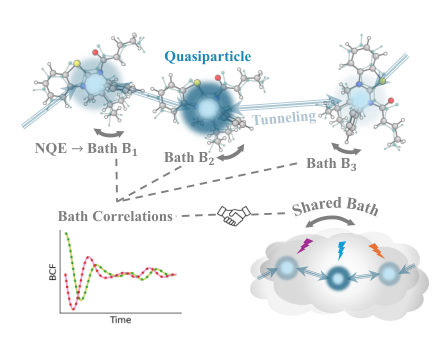
<figcaption class="paper-figure-caption"><b>Fig 1.</b> FIG. 1. Schematics of quantum transport in organic materials and the SPA approach.</figcaption>
</figure>
<figure class="paper-figure-card">
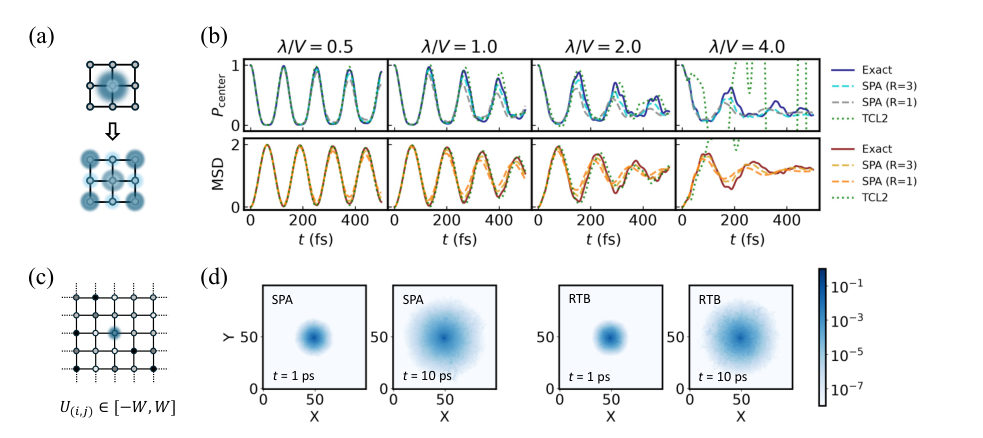
<figcaption class="paper-figure-caption"><b>Fig 2.</b> FIG. 2. (a) Schematic of the population dynamics on the 3 × 3 lattice. (b) Pcenter and the MSD as functions of time, obtained from exact simulation, SPA, and TCL2. The statistical uncertainties in the SPA results are smaller than the plotted line width and are therefore not shown. (c) Schematic of the disordered site energies U(X,Y ) and the localized initial state on the 2D lattice. U(X,Y ) ∈[−W, W] is uniformly sampled with W = 200 cm−1 for each realization of random phases. (d) Snapshots of the site populations P(X,Y)(t) on a logarithmic color scale obtained with λ/V = 8.0.</figcaption>
</figure>
<figure class="paper-figure-card">
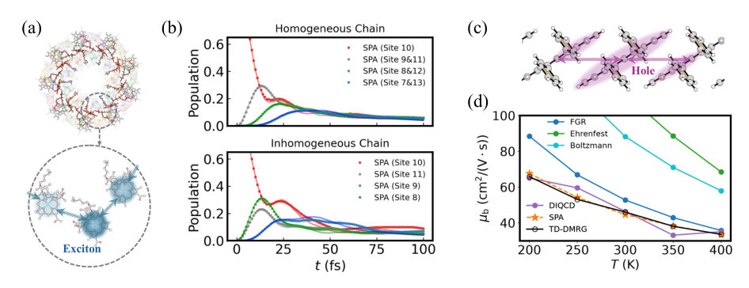
<figcaption class="paper-figure-caption"><b>Fig 3.</b> FIG. 3. (a) The experimental crystal structure of LH2 B800-850 [52, 53] and a schematic of exciton migration within the B850 ring. (b) Exciton population dynamics for homogeneous and inhomogeneous (staggered) 19-site BChl chains at T = 300 K. SPA predictions are reported as dots, while MPI predictions are reported as lines. (c) The bc plane of a rubrene crystal. Purple shading indicates a localized hole [54]. (d) b-axis carrier mobility as a function of temperature. In (b) and (d), statistical uncertainties of the SPA results are smaller than the marker size and are not shown.</figcaption>
</figure>
</div>

<p><strong>Summary.</strong> This paper introduces the Stochastic Phase Algorithm (SPA) to overcome the computational limitations of simulating non-Markovian quantum transport in large molecular systems. SPA achieves scalability by replacing numerous local bath descriptions with a small number of shared, phase-modulated baths. It successfully reproduces benchmark results for charge transport in materials like rubrene and BChl aggregates, providing a powerful tool for open quantum system dynamics.</p>
<p><strong>Why it may be interesting.</strong> This work directly addresses the simulation of open quantum systems, particularly those involving electron-phonon or electron-vibration coupling, which is a core topic in AMO physics and quantum optics.</p>
<details>
<summary>Detailed structure</summary>
<p><strong>Main problem.</strong> Accurately simulating non-Markovian quantum transport in extended molecular systems is challenging due to the exponential growth of the Hilbert space and the complexity of intermediate electron-vibronic coupling.</p>
<p><strong>Main result.</strong> The Stochastic Phase Algorithm (SPA) provides a scalable method to simulate these dynamics by replacing independent local baths with shared baths, achieving a fixed-time error bound independent of system size.</p>
<p><strong>Method.</strong> The SPA replaces local Gaussian baths with $R$ shared baths modulated by stochastic site-dependent phases, and the resulting dynamics are obtained via phase averaging, which is combined with coupled-Lindblad spectral compression.</p>
<p><strong>Model / system.</strong> The study uses single-quasiparticle transport on Holstein-type tight-binding networks, applied to physical systems like bacteriochlorophyll aggregates and rubrene crystals.</p>
<p><strong>Key observables.</strong> Quasiparticle population ($P_i(t)$), Mean-Squared Displacement ($    ext{MSD}(t)$), and electronic mobility ($\mu_b(T)$).</p>
<p><strong>Important parameters / regimes.</strong> The error scales as $O(R^{-1})$, and the method is shown to be robust in the intermediate-coupling regime ($\lambda/V > 2$).</p>
<p><strong>Assumptions / limitations.</strong> The primary assumption is that phase averaging correctly reproduces the two-point bath correlation matrix, and the method is combined with spectral compression to manage bath dimensionality.</p>
<p><strong>Figures summary.</strong> Figures illustrate population dynamics, MSD vs. time, and site population snapshots comparing SPA against exact and other theoretical benchmarks.</p>
<p><strong>Paper structure.</strong> The paper introduces the SPA to address the simulation bottleneck, derives the error bounds, and then validates the method by applying it to multiple physical benchmarks: 2D Holstein models, BChl aggregates, and rubrene charge transport.</p>
</details>
<details>
<summary>Abstract</summary>
<p>Accurate simulations of non-Markovian quantum transport remain limited to small systems, and a key bottleneck is that each system site requires an independent set of quantum bath orbitals. We introduce the Stochastic Phase Algorithm (SPA), which replaces the independent local Gaussian baths in single-quasiparticle Holstein models by $R$ shared quantum baths with stochastic site-dependent phases. We prove that phase averaging reproduces the target two-point bath correlation matrix for every $R$, while increasing $R$ systematically suppresses errors from higher-order cross-site correlations. We obtain a fixed-time $O(R^{-1})$ trace-norm error bound with a prefactor independent of system size and connectivity. This spatial compression applies directly to unitary baths and can be combined with coupled-Lindblad spectral compression [Phys. Rev. Lett. 136, 090403 (2026)], which represents each shared environment by a very small number of coupled, damped quantum modes fitted to its thermal bath correlation over the simulation window. Numerically, SPA converges against direct unitary benchmarks on a $3\times3$ lattice, enables full-state-vector quantum-bath dynamics on a $100\times100$ lattice, and, with $R=1$, closely reproduces near exact benchmarks for exciton populations in bacteriochlorophyll aggregates and carrier mobility in rubrene.</p>
</details>
<p><sub><a href="#top">↑ back to top</a></sub></p>

<p><a id="paper-2609.26889"></a></p>
<h3 id="deterministic-photon-waveform-adaptation-for-quantum-connectivity"><a href="http://arxiv.org/abs/2609.26889v1">Deterministic photon waveform adaptation for quantum connectivity</a></h3>
<p><strong>Authors:</strong> Jeffrey Mohan, Jérémy Berroir, Filippo Borselli, David Libault, Ferhat Loubar, Kilian Müller, Jed Rowland, Félix Hoffet, Eleni Diamanti, Tom Darras, Tommaso Mazzoni, Julien Laurat<br>
<strong>Type:</strong> experiment · <strong>Category:</strong> quantum information and computing · <strong>PDF:</strong> <a href="https://arxiv.org/pdf/2609.26889v1">https://arxiv.org/pdf/2609.26889v1</a><br>
<strong>Analysis basis:</strong> full PDF text, analyzed in chunks
<strong>Topic relevance:</strong> 🔥 <code>quantum optics experiment</code> <strong>4/5</strong> · <code>QC/QI experiment</code> <strong>3/5</strong> · <code>interference shaping light</code> <strong>3/5</strong> · <code>analog quantum simulation</code> <strong>2/5</strong> · <code>methods for driven-dissipative</code> <strong>1/5</strong> · <code>quantum measurements</code> <strong>1/5</strong></p>
<div class="figure-strip-hint">↔ Scroll figures horizontally</div>
<div class="paper-figures-scroll">
<figure class="paper-figure-card">
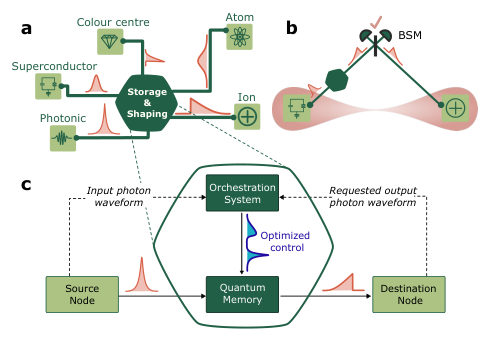
<figcaption class="paper-figure-caption"><b>Fig 1.</b> FIG. 1. Programmable photonic interface for quantum connectivity. a, Photons emitted by heterogeneous quan- tum platforms exhibit incompatible temporal waveforms. A programmable quantum memory reshapes them into match- ing waveforms, enabling photonic interconnects between het- erogeneous nodes. b, Schematic of interference-based entan- glement generation via Bell-state measurement (BSM) be- tween two nodes, illustrating a key application of photon adaptation. c, For given input and target output waveforms, the temporal profile of the control beam power is computed and applied to optimally store and reshape the photon.</figcaption>
</figure>
<figure class="paper-figure-card">
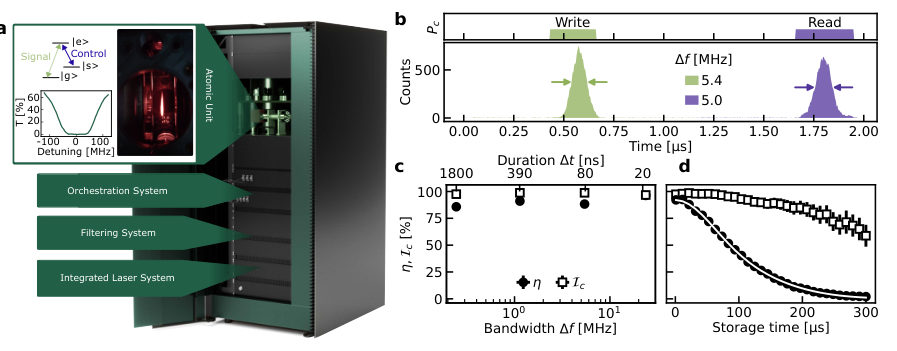
<figcaption class="paper-figure-caption"><b>Fig 2.</b> FIG. 2. QDrive quantum memory system. a, Schematic of the manufactured integrated system, which we name QDrive. The implementation relies on a large ensemble of 87Rb atoms trapped in a vertically-oriented elongated magneto-optical trap. Storage and retrieval are realised via EIT using a control beam with programmable power. The plot shows the signal transmission as a function of the detuning, corresponding to an optical depth of about 750. b, Example memory sequence showing the temporal profile of the control field power Pc together with histograms of photodetection events, revealing the input and retrieved signal waveforms. c, Memory storage-and-retrieval efficiency η and conditional...</figcaption>
</figure>
<figure class="paper-figure-card">
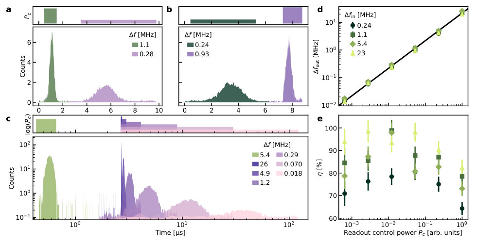
<figcaption class="paper-figure-caption"><b>Fig 3.</b> FIG. 3. Bandwidth adaptation of single-photon Gaussian pulses. a-b, Examples of pulse stretching and compression. When the read pulse has lower power and longer duration than the write pulse, the signal pulse bandwidth is reduced and the pulse is temporally stretched. Conversely, when the read pulse has higher power and shorter duration than the write pulse, the bandwidth increases and the pulse is compressed. c, By simultaneously varying the power and duration of the read pulse while keeping their product constant, the same input pulse can be either compressed or stretched in time, providing over three decades of tunable output bandwidths. d, Bandwidth of the output pulse ∆fout as a...</figcaption>
</figure>
<figure class="paper-figure-card">
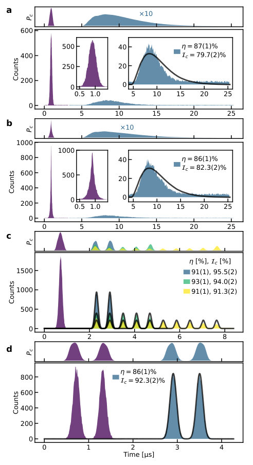
<figcaption class="paper-figure-caption"><b>Fig 4.</b> FIG. 4. High-efficiency storage and generation of ar- bitrary waveforms. We compute and implement the tem- poral profile of the control field power Pc during both the write and read stages to write an arbitrary input and de- terministically shape the retrieved signal pulse while main- taining high memory efficiency η and conditional overlap be- tween the retrieved and target waveforms Ic. a, A Gaus- sian input pulse (∆t = 285 ns) is read out as a non-Gaussian waveform (∆t = 4.1 µs) characteristic of photons emitted by an ion embedded in a cavity; the grey line in the inset shows the target waveform. b, A double-exponential wave- form (∆t = 110 ns) characteristic of single photons generated...</figcaption>
</figure>
</div>

<p><strong>Summary.</strong> This paper demonstrates a cold-atom quantum memory that acts as a programmable photonic interface, solving the challenge of connecting quantum systems with mismatched photon properties. By using optimal control theory, the system can deterministically reshape stored single-photon pulses to match any desired output waveform. This capability establishes a key building block for scalable, modular quantum networks and computing architectures.</p>
<p><strong>Why it may be interesting.</strong> This work directly addresses a critical hardware bottleneck in quantum networking by transforming a passive storage element into an active, programmable quantum interface, which is highly relevant for quantum information processing.</p>
<details>
<summary>Detailed structure</summary>
<p><strong>Main problem.</strong> Scalability of quantum technologies requires interconnecting independent quantum systems, which is limited by the differing photonic properties of heterogeneous quantum platforms.</p>
<p><strong>Main result.</strong> The system achieves deterministic and programmable temporal adaptation of single-photon pulses while maintaining near-unity storage-and-retrieval efficiency.</p>
<p><strong>Method.</strong> Optimal control theory is used to dynamically modulate the pulse group velocity in a cold-atom memory, allowing reshaping of the retrieved photon waveform.</p>
<p><strong>Model / system.</strong> The platform is a cold-atom optical quantum memory using Electromagnetically Induced Transparency (EIT) in a $^{87}	ext{Rb}$ ensemble, functioning as an active, programmable photonic interface.</p>
<p><strong>Key observables.</strong> Storage-and-retrieval efficiency ($\eta$), conditional overlap ($I_c$), and the ability to reshape output waveforms to match arbitrary target profiles.</p>
<p><strong>Important parameters / regimes.</strong> Storage durations spanning over three orders of magnitude; the control field power $P_c(t)$ is the key tunable parameter.</p>
<p><strong>Assumptions / limitations.</strong> The system requires ultra-high optical depth and low temperature for high efficiency, and the control mechanism relies on engineering the control beam power $P_c(t)$.</p>
<p><strong>Figures summary.</strong> Figures illustrate the concept of reshaping incompatible waveforms for quantum interconnects, the integrated system setup, and demonstrations of bandwidth adaptation and arbitrary waveform generation.</p>
<p><strong>Paper structure.</strong> The paper establishes the need for quantum interconnects, presents the cold-atom memory as an active interface, details the use of optimal control to achieve deterministic waveform reshaping, and demonstrates high efficiency across wide bandwidths.</p>
</details>
<details>
<summary>Abstract</summary>
<p>The scalability of quantum technologies will depend on the ability to interconnect independent quantum systems through photonic channels. However, heterogeneous quantum platforms emit and absorb photons with widely differing properties, severely limiting inter-node interference and modular connectivity. Here we demonstrate a cold-atom optical quantum memory that simultaneously achieves near-unity storage-and-retrieval efficiency and deterministic temporal adaptation of single photons between arbitrary and programmable input and output pulse waveforms. Operating at high optical depth and within a fully integrated architecture, the system can store photons with durations spanning over three orders of magnitude and reshape them arbitrarily without compromising efficiency, achieving compatibility with many current platforms. By augmenting the role of a quantum memory from a passive storage element to an active programmable photonic interface, our results establish a key building block for scalable entanglement-based quantum networks and modular quantum computing architectures.</p>
</details>
<p><sub><a href="#top">↑ back to top</a></sub></p>

<p><a id="paper-2609.27497"></a></p>
<h3 id="optimal-low-rank-compression-of-quantum-dynamics"><a href="http://arxiv.org/abs/2609.27497v1">Optimal low-rank compression of quantum dynamics</a></h3>
<p><strong>Authors:</strong> Hugo Mackay, Donghoon Kim, Tan Van Vu, Tomotaka Kuwahara<br>
<strong>Type:</strong> theory · <strong>Category:</strong> statistical mechanics · <strong>PDF:</strong> <a href="https://arxiv.org/pdf/2609.27497v1">https://arxiv.org/pdf/2609.27497v1</a><br>
<strong>Analysis basis:</strong> full PDF text, analyzed in chunks
<strong>Topic relevance:</strong> 🔥 <code>methods for driven-dissipative</code> <strong>4/5</strong> · <code>analog quantum simulation</code> <strong>3/5</strong> · <code>correlated / nonlocal dissipation</code> <strong>2/5</strong> · <code>driven-dissipative phase transition</code> <strong>2/5</strong> · <code>non-equilibrium universality</code> <strong>2/5</strong> · <code>Keldysh / 2PI / non-Gaussian methods</code> <strong>1/5</strong></p>
<div class="figure-strip-hint">↔ Scroll figures horizontally</div>
<div class="paper-figures-scroll">
<figure class="paper-figure-card">
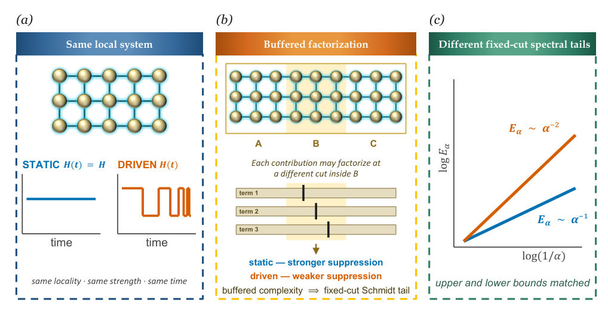
<figcaption class="paper-figure-caption"><b>Fig 1.</b> FIG. 1. Arbitrary temporal control can change the extremal compression law. (a) We compare time-independent and arbitrarily driven evolution under the same spatial locality, local interaction strength, and total evolution time. (b) Keeping a finite buffer B between endpoint regions A and C leads to the buffered Schmidt rank (BSR), which is the minimum number of product terms when different terms may factorize across different cuts within the buffer B. Our bounds show stronger suppression of this buffered complexity for static dynamics than in the worst case allowed by arbitrary driving; converting the BSR bounds to a prescribed cut controls the corresponding Schmidt-spectrum tail. (c) At...</figcaption>
</figure>
<figure class="paper-figure-card">
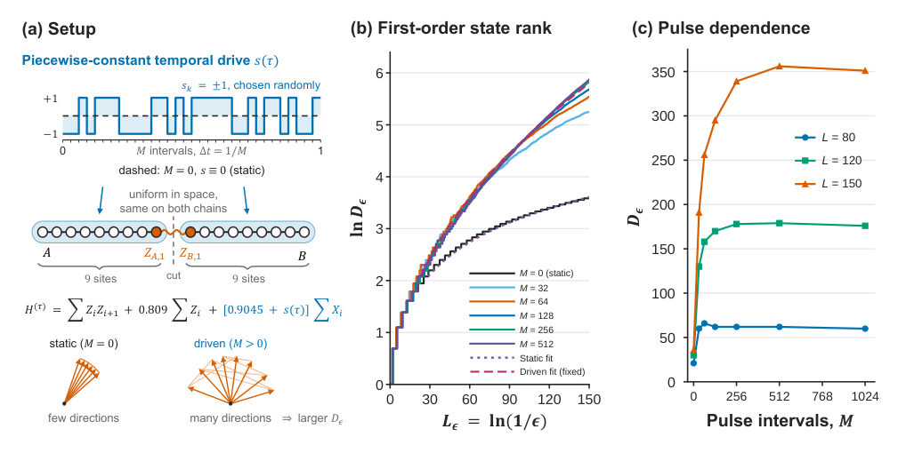
<figcaption class="paper-figure-caption"><b>Fig 2.</b> FIG. 2. Temporal entanglement-capacity amplification of a boundary interaction. (a) We numerically probe the first-order contribution in Eq. (17) for two identical open spin-1/2 chains, A and B, of length b = 9 (i.e., 18 spins in total). The uncoupled evolution is generated by H(τ) 0 = H(τ) A + H(τ) B , with H(τ) A = H(τ) B = Pb−1 i=1 ZiZi+1 + 0.809 Pb i=1 Zi + (0.9045 + s(τ)) Pb i=1 Xi, in units J = ℏ= 1, and the boundary interaction is V = ZA,1 ⊗ZB,1. The total evolution time is t = 1. For M &gt; 0, s(τ) = ±1 is spatially uniform and piecewise constant over M equal intervals, with the same random sequence applied to both chains; M = 0 denotes the static case s(τ) = 0. For the product state...</figcaption>
</figure>
<figure class="paper-figure-card">
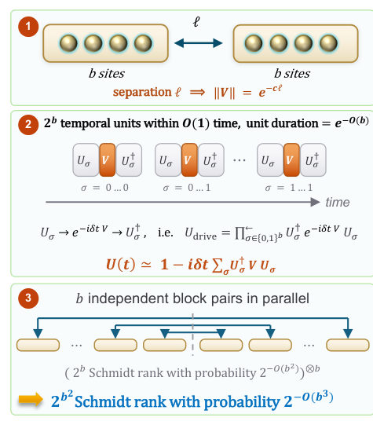
<figcaption class="paper-figure-caption"><b>Fig 3.</b> FIG. 3. Driven lower-bound protocol underlying the 2/3 accuracy exponent. Step 1: Weak interaction between dis- tant blocks. Consider two b-site blocks on opposite sides of the target cut, separated by a distance ℓand coupled by a weak interaction V . For exponentially decaying interactions, the coupling strength is suppressed as ∥V ∥∼e−cℓ. The blocks otherwise evolve independently, so local control on the two sides can change the operator direction of V without increasing its instantaneous Schmidt rank. Step 2: Temporal amplification within one block pair. For each bit string σ ∈{0, 1}b, local encoding operations Uσ = Uσ,A ⊗Uσ,B rotate the same weak interaction into a different direction,...</figcaption>
</figure>
<figure class="paper-figure-card">
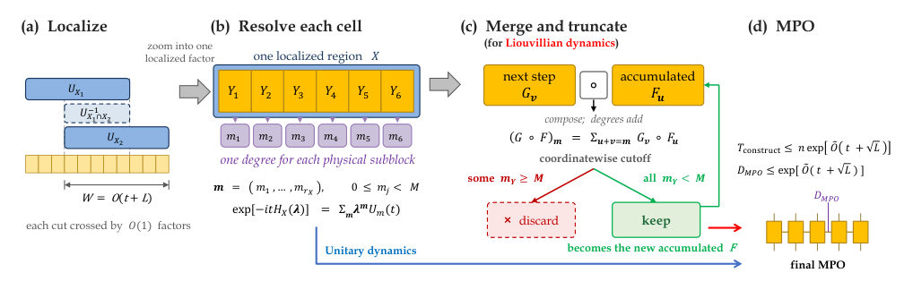
<figcaption class="paper-figure-caption"><b>Fig 4.</b> FIG. 4. Constructive MPO realization of the static compression bound. (a) Localization. For unitary dynamics, the HHKL decomposition reduces the full evolution to a product of localized unitaries supported on intervals of width W = O(t + L), where L = log[Cn(1 + t)/ϵ]. For each cut, the decomposition has bounded multiplicity: every microscopic cut is crossed by only O(1) localized unitaries. It is therefore sufficient to construct an MPO for one localized evolution UX(t) = e−itHX , where |X| = O(t + L). (b) Resolution by local degrees. A localized region X is partitioned into coarse physical subblocks Yj of width b ≍ √</figcaption>
</figure>
<figure class="paper-figure-card">
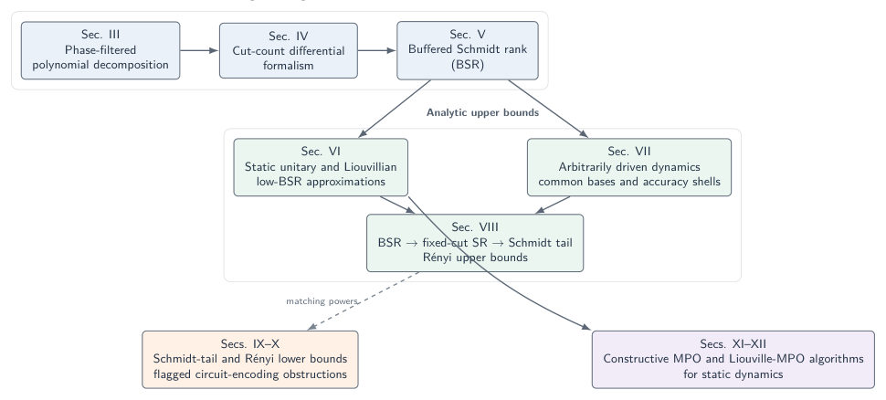
<figcaption class="paper-figure-caption"><b>Fig 5.</b> FIG. 1. Road map of the paper. Sections III–V provide the algebraic engine. Sections VI and VII turn it into static and driven low-BSR approximations; Proposition 9 and Sec. VIII convert them into fixed-cut Schmidt-spectrum and R´enyi bounds. Sections IX and X give matching entanglement-spectrum lower bounds and independent flagged-circuit obstructions. Section VII.B identifies structured drives with static-type compression bounds. Sections XI and XII give explicit unitary and Liouville-MPO algorithms, with the extensions in Secs. XI.A and XII.A recovering the static scaling for efficiently represented structured driving.</figcaption>
</figure>
</div>

<p><strong>Summary.</strong> This paper establishes rigorous bounds on the minimum information content required to simulate local quantum dynamics. By comparing static versus time-dependent driving, the authors show that the required computational complexity differs significantly. These results provide a deep understanding of the fundamental entanglement structures governing quantum evolution.</p>
<p><strong>Why it may be interesting.</strong> This work provides fundamental, quantitative bounds on the complexity of quantum information storage and processing, directly impacting how we model and simulate complex, interacting quantum systems in condensed matter theory.</p>
<details>
<summary>Detailed structure</summary>
<p><strong>Main problem.</strong> The paper determines the minimum information (low-rank complexity) required to accurately represent the time evolution generated by local quantum interactions in an exponentially large Hilbert space.</p>
<p><strong>Main result.</strong> The optimal compression law differs significantly between static (time-independent) and arbitrarily driven quantum dynamics, with the static case requiring less information than the driven case.</p>
<p><strong>Method.</strong> The authors utilize tensor networks, specifically analyzing the Buffered Schmidt Rank (BSR), to quantify the required low-rank representation needed to bound the error in approximating the time evolution operator.</p>
<p><strong>Model / system.</strong> The study considers quantum many-body systems on a lattice ($\Lambda$) governed by local Markovian dynamics, described by either a time-dependent Hamiltonian $H(	au)$ or a Lindblad master equation $L(	au)$.</p>
<p><strong>Key observables.</strong> Low-rank complexity ($D_\epsilon$), dynamical entanglement spectra, and the Buffered Schmidt Rank (BSR).</p>
<p><strong>Important parameters / regimes.</strong> Time ($t$), accuracy ($\epsilon$), and the nature of the driving (static vs. arbitrary).</p>
<p><strong>Assumptions / limitations.</strong> The analysis relies on the assumption of exponentially decaying local interactions and the use of tensor network techniques to exploit locality bounds.</p>
<p><strong>Figures summary.</strong> Figure 1 compares the extremal compression laws for static versus driven evolution and illustrates the distinct small-alpha Rényi scaling ($\alpha^{-1}$ vs. $\alpha^{-2}$) for the entanglement spectra.</p>
<p><strong>Paper structure.</strong> The paper develops the problem by first establishing the general framework using tensor networks and locality bounds. It then derives specific scaling laws for static and driven dynamics, culminating in constructive algorithms for the 1D case and detailed analysis of entanglement spectra.</p>
</details>
<details>
<summary>Abstract</summary>
<p>Local quantum interactions generate dynamics in an exponentially large Hilbert space, yet locality and entanglement restrict the information that can spread and accumulate. Bounds on propagation and entanglement growth, together with tensor networks, exploit these restrictions to discard information unnecessary for describing the evolution. This leads to a sharper question: how much information must any low-rank representation retain? Here we determine these limits, up to logarithmic factors, for short-range interactions. For time-independent evolution, the optimal rank obeys $\log D=\widetilde O(t+\sqrt{\log(1/ε)})$, with matching lower bounds fixing the accuracy exponent $1/2$; for arbitrary driving, matching fixed-time bounds instead give $2/3$. Correspondingly, the corresponding dynamical entanglement spectra exhibit distinct small-$α$ Rényi laws, $α^{-1}$ and $α^{-2}$. In one dimension, the static limit is constructively attained by an explicit MPO algorithm, with an analogous extension to Liouvillian dynamics. Together, these results determine the irreducible information required to represent local quantum evolution and uncover distinct entanglement structures in static and driven dynamics.</p>
</details>
<p><sub><a href="#top">↑ back to top</a></sub></p>

<p><a id="paper-2609.27601"></a></p>
<h3 id="scalable-integration-of-silicon-carbide-color-centers-into-nanophotonic-structures"><a href="http://arxiv.org/abs/2609.27601v1">Scalable integration of silicon carbide color centers into nanophotonic structures</a></h3>
<p><strong>Authors:</strong> Raphael Wörnle, Jonas Schmid, Dennis Grüner, Jonah Heiler, Flavie Davidson-Marquis, Georgy V. Astakhov, Vadim Vorobyov, Florian Kaiser, Jonathan Körber, Jörg Wrachtrup<br>
<strong>Type:</strong> experiment · <strong>Category:</strong> quantum information and computing · <strong>PDF:</strong> <a href="https://arxiv.org/pdf/2609.27601v1">https://arxiv.org/pdf/2609.27601v1</a><br>
<strong>Analysis basis:</strong> full PDF text, analyzed in chunks
<strong>Topic relevance:</strong> 🔥 <code>QC/QI experiment</code> <strong>4/5</strong> · <code>quantum optics experiment</code> <strong>3/5</strong> · <code>Tavis-Cummings &amp; cavity-many-emitter</code> <strong>1/5</strong> · <code>analog quantum simulation</code> <strong>1/5</strong> · <code>quantum measurements</code> <strong>1/5</strong></p>
<div class="figure-strip-hint">↔ Scroll figures horizontally</div>
<div class="paper-figures-scroll">
<figure class="paper-figure-card">
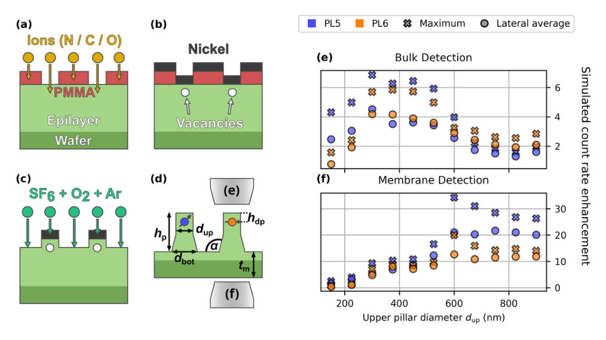
<figcaption class="paper-figure-caption"><b>Fig 1.</b> Figure 1: Fabrication and optimization of nanopillars with integrated color centers. (a) Patterning of the im- plantation mask by electron-beam lithography in a 400 nm-thick spin-coated PMMA layer and implantation of nitrogen, carbon, or oxygen ions to create vacancies in the SiC lattice. (b) Evaporation of a 250 nm-thick nickel layer using electron-beam evaporation to create the nickel etching mask after a subsequent lift-off. (c) Reactive-ion-etching to fab- ricate the nanopillars. (d) Sketch of the finished pillars after etching, including the relevant parameters and the different methods for photon collection. PL5 and PL6 color centers are created using a two-step thermal annealing...</figcaption>
</figure>
<figure class="paper-figure-card">
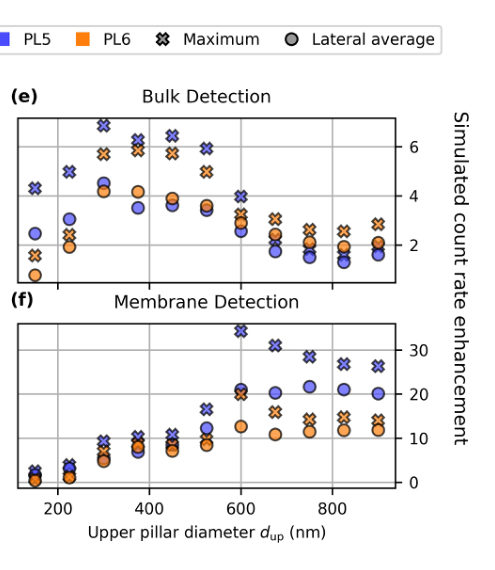
<figcaption class="paper-figure-caption"><b>Fig 2.</b> Figure 2(a) shows a typical continuous-wave optically de- tected magnetic resonance (CW-ODMR) measurement for a PL5 center with a two-Lorentzian fit function in zero mag- netic field with a measured contrast of 15%. Analogously, a CW-ODMR spectrum is depicted in Figure 2(b) for a PL6 center reaching a contrast of 18%. For the PL6 center, the visible splitting between the two dips without an applied ex- ternal magnetic field can be attributed to a local magnetic field in the setup near the sample likely resulting from a magnetization of the objective as already reported in other works [37]. Calculating the center frequency of both dips</figcaption>
</figure>
<figure class="paper-figure-card">
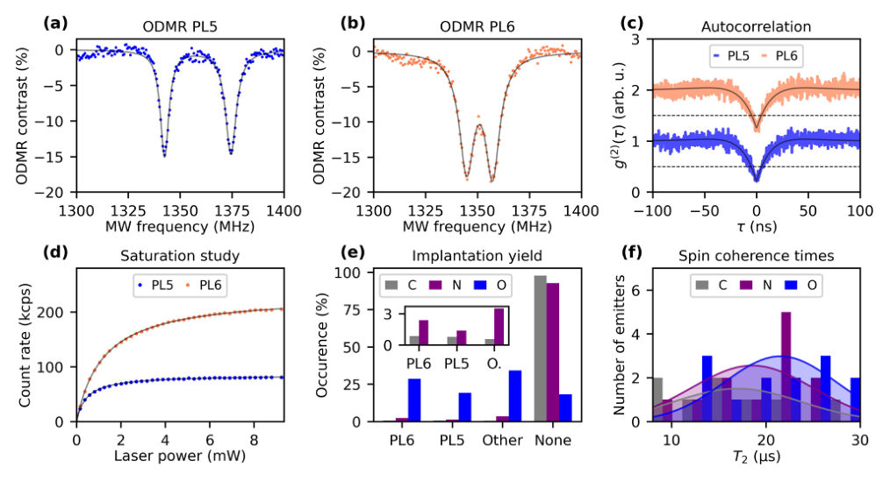
<figcaption class="paper-figure-caption"><b>Fig 3.</b> Figure 2: Properties of PL5 &amp; PL6 centers in bulk SiC. CW-ODMR spectra for a PL5 center (a) and PL6 center (b) in zero magnetic field with a two-Lorentzian fit function. (c) Second-order autocorrelation measurements for a PL5 (blue) and PL6 center (orange), confirming the single-defect behavior with a g(2)(0) &lt; 0.5 for both color centers. (d) Background-corrected saturation study of a PL5 (blue) and for a PL6 center (orange) with saturation intensities of 85.0 ± 0.6 kcps and 233.1 ± 1.8 kcps, respectively. (e) Implantation yield for the three different ions used for the generation of color centers. Inset shows zoomed in version for the carbon and nitrogen implantation. (f) Measured spin...</figcaption>
</figure>
<figure class="paper-figure-card">
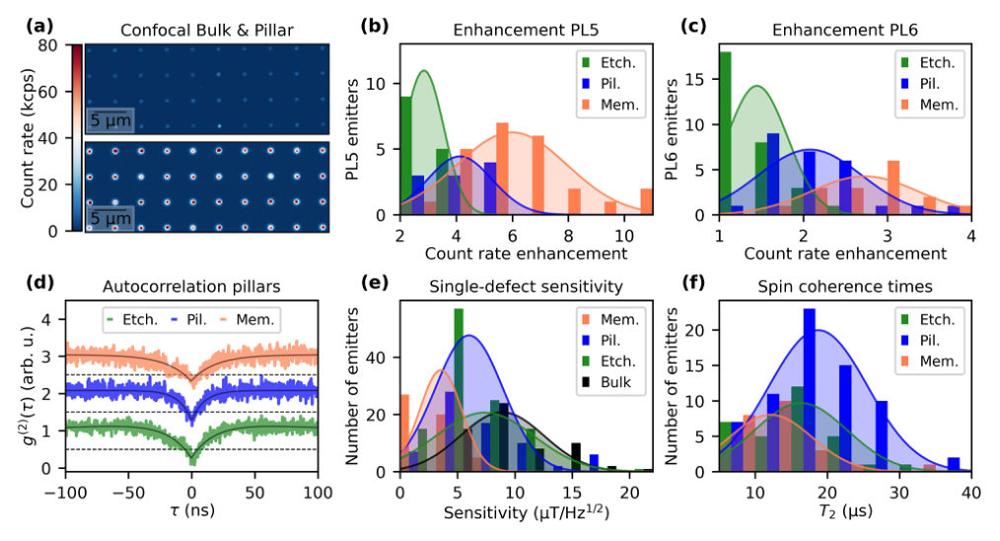
<figcaption class="paper-figure-caption"><b>Fig 4.</b> Figure 3: Color centers integrated into nanopillars. (a) Confocal luminescence maps of color centers in bulk SiC (top) and nanopillars (bottom) at similar laser excitation levels. (b) and (c) Measured photon count-rate enhancement relative to bulk SiC emitters for PL5 and PL6 centers in etched nanopillars (green), bulk nanopillars (blue) and mem- brane pillars (orange). Colored lines correspond to the Gaussian distributions of the enhancement. (d) Second-order autocorrelation measurements for individual emitters inside the fabricated nanostructures with corresponding fit function (black). (e) Single-defect sensitivity calculated after equation (1) for emitters in etched nanopillars (green),...</figcaption>
</figure>
</div>

<p><strong>Summary.</strong> This paper presents a scalable, deterministic fabrication technique to embed color centers in silicon carbide (SiC) nanopillars. By integrating ion implantation and dry etching using a single mask, the authors overcome low photon collection efficiency, achieving significant count rate enhancements while maintaining the quantum coherence properties of the emitters.</p>
<p><strong>Why it may be interesting.</strong> This work directly addresses the engineering challenge of coupling solid-state quantum emitters to photonic structures, which is crucial for building scalable quantum networks and quantum memories.</p>
<details>
<summary>Detailed structure</summary>
<p><strong>Main problem.</strong> The primary challenge addressed is overcoming the low photon collection efficiency when integrating color centers into nanophotonic structures for quantum applications.</p>
<p><strong>Main result.</strong> The authors report a scalable, deterministic method to integrate color centers into SiC nanopillars, achieving count rate enhancements up to an order of magnitude while preserving spin coherence times.</p>
<p><strong>Method.</strong> The method combines deterministic ion implantation (using a patterned PMMA mask) with subsequent dry etching to define the nanopillar structure, enabling precise placement of quantum emitters.</p>
<p><strong>Model / system.</strong> The system utilizes color centers (PL5 and PL6) in silicon carbide (SiC) embedded within fabricated nanopillars. Characterization involves optical measurements (luminescence, ODMR) and quantum measurements ($g^{(2)}(0)$, $T_2$).</p>
<p><strong>Key observables.</strong> Count rate enhancement factor, spin coherence time ($T_2$), second-order correlation function ($g^{(2)}(0)$), and defect creation yield.</p>
<p><strong>Important parameters / regimes.</strong> Pillar dimensions (e.g., 200–900 nm diameter, $2.5\ \mu	ext{m}$ height), implantation ion species ($   ext{O},     ext{N},     ext{C}$), and annealing temperatures.</p>
<p><strong>Assumptions / limitations.</strong> The method assumes the PMMA mask defines both the implantation sites and the final nanopillar geometry, and that spin coherence times are preserved during the etching process.</p>
<p><strong>Figures summary.</strong> Figures illustrate the fabrication process flow, simulated count rate enhancements vs. pillar diameter, ODMR spectra, $g^{(2)}(0)$ measurements confirming single-emitter behavior, and $T_2$ measurements across different pillar types.</p>
<p><strong>Paper structure.</strong> The paper details the fabrication process flow, starting with lithography and implantation, followed by etching to create nanopillars. Characterization proceeds by measuring optical enhancement, confirming single-photon emission statistics, and measuring spin coherence times, comparing results across bulk, membrane, and etched pillar geometries.</p>
</details>
<details>
<summary>Abstract</summary>
<p>Color centers in silicon carbide are a promising platform for quantum technologies, offering long-coherence electron and nuclear spins for storing and manipulating quantum information, as well as single-photon emission for quantum communication. Low photon collection efficiency is commonly addressed by integrating color centers into nanophotonic devices. Here, we report a scalable method for the deterministic integration of color centers into silicon carbide nanopillars, using the same nanoscale mask for both implantation of oxygen-related color centers (PL5, PL6) and subsequent nanopillar fabrication via dry etching. This approach solves the issue of low color center creation yield in nanostructures, with figures of merit comparable to bulk samples. We demonstrate count rate enhancements of up to one order of magnitude for PL5 and four times for PL6, while preserving spin coherence times. Our method is directly applicable to other solid-state platforms, offering a scalable route to efficiently integrate color centers into nanostructures.</p>
</details>
<p><sub><a href="#top">↑ back to top</a></sub></p>

<p><a id="paper-2609.28294"></a></p>
<h3 id="a-photonic-integrated-comb-engine-for-ultracold-quantum-gases"><a href="http://arxiv.org/abs/2609.28294v1">A photonic integrated comb engine for ultracold quantum gases</a></h3>
<p><strong>Authors:</strong> Wei Sun, Xiaoying Yan, Jinbao Long, Sanli Huang, Zhixin Duan, Zhenyuan Shang, Zeying Zhong, Jiahao Sun, Yue Hu, Shichang Li, Baoqi Shi, Yi-Han Luo, Shuyi Li, Hao Tan, Chen Shen, Zhichuan Niu, Shengjun Yang, Junqiu Liu<br>
<strong>Type:</strong> experiment · <strong>Category:</strong> quantum gases · <strong>PDF:</strong> <a href="https://arxiv.org/pdf/2609.28294v1">https://arxiv.org/pdf/2609.28294v1</a><br>
<strong>Analysis basis:</strong> full PDF text, analyzed in chunks
<strong>Topic relevance:</strong> 🔥 <code>analog quantum simulation</code> <strong>4/5</strong> · <code>interference shaping light</code> <strong>2/5</strong> · <code>quantum optics experiment</code> <strong>2/5</strong> · <code>QC/QI experiment</code> <strong>1/5</strong></p>
<div class="figure-strip-hint">↔ Scroll figures horizontally</div>
<div class="paper-figures-scroll">
<figure class="paper-figure-card">
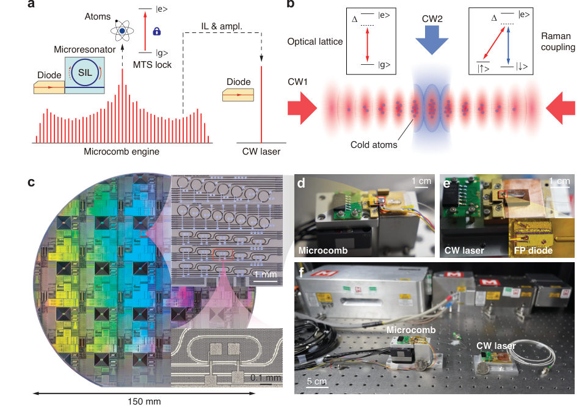
<figcaption class="paper-figure-caption"><b>Fig 1.</b> Figure 1. Integrated microcomb engine for cold-atom manipulation. a, Generation of a platicon microcomb within a nonlinear microresonator edge-coupled to a laser diode. The CW pump is stabilized to an atomic transition |g⟩→|e⟩via a modulation-transfer spectroscopy (MTS) lock. A far-detuned comb line is filtered and amplified via injection locking (IL &amp; ampl.) into a secondary laser diode, creating a high-power, narrow-linewidth CW laser for downstream cold-atom manipulation. b, Configuration for cold-atom manipulation. Counter-propagating beams (CW1) from the high-power diode form an optical lattice (left inset). A frequency-shifted secondary beam (CW2) from the same diode intersects CW1 to...</figcaption>
</figure>
<figure class="paper-figure-card">
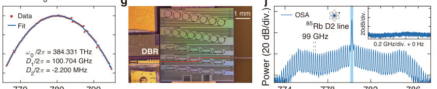
<figcaption class="paper-figure-caption"><b>Fig 2.</b> Figure 2. Microresonator characterization and platicon microcomb generation. a, Self-injection locking (SIL) and platicon microcomb generation in the hybrid diode–microresonator chip. A+ is the forward propagating light in the microresonator, coupled from the diode pump. Backscattering light, A−, is induced and propagates backward into the diode, locking the diode laser frequency to the microresonator resonance and narrowing its linewidth. With sufficient pump power, a platicon/dark pulse is generated in the microresonator via Kerr nonlinearity. b, Typical resonance profile of the high-Q Si3N4 microresonators in the 780 nm band. Lorentzian fitting yields an intrinsic loss of κ0/2π = 41 MHz...</figcaption>
</figure>
<figure class="paper-figure-card">
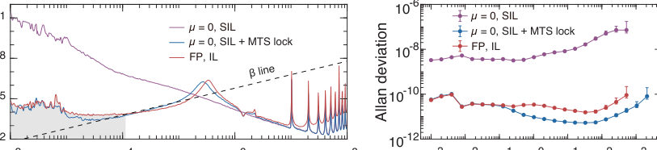
<figcaption class="paper-figure-caption"><b>Fig 3.</b> Figure 3. Frequency stabilization, power amplification, and noise suppression of the microcomb. a, Schematic of the experimental setup for microcomb generation and stabilization (via SIL and MTS), amplification of a selected comb line (via injection locking), and free-space delivery to cold atoms. b, Optical spectra of the SIL-generated, 99-GHz-spaced microcomb (left) and the injection- amplified CW laser (right). Injection locking amplifies (IL &amp; ampl.) the −10th comb line to 102 mW (40.6 dB gain) with an SMSR of 41.7 dB. c, Laser frequency tuning dynamics driven by diode currents during SIL (left) and IL (right). Vertical axes denote the respective beat frequencies of the DBR and FP...</figcaption>
</figure>
<figure class="paper-figure-card">
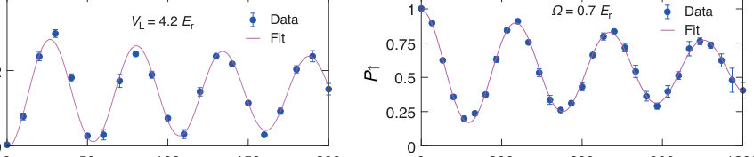
<figcaption class="paper-figure-caption"><b>Fig 4.</b> Figure 4. Optical lattice construction and Raman coupling calibrations. a, Absorption images (left to right) detailing the emergence of a BEC from a thermal atomic cloud during evaporative cooling, evidenced by the formation of a bimodal density distribution. b, Energy-level diagram of 87Rb. The 87Rb D1 and D2 transition wavelengths are 794.98 and 780.24 nm, respectively, with F denoting the total atomic angular momentum and mF the corresponding magnetic quantum number. The BEC is initialized in the |F, mF ⟩= |1, −1⟩ state, and the amplified microcomb line provides the 782.25-nm driving field. c, Kapitza–Dirac diffraction calibration of the optical lattice. Retro-reflected CW1 beams of...</figcaption>
</figure>
<figure class="paper-figure-card">
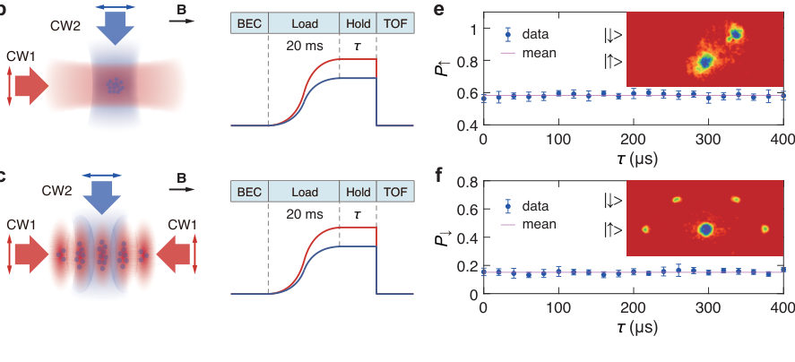
<figcaption class="paper-figure-caption"><b>Fig 5.</b> Figure 5. Adiabatic preparation of stationary quantum states. a–c, Schematic protocols for loading the BEC into a one- dimensional optical lattice (panel a), a spin-orbit coupling configuration (panel b), and a Raman lattice (panel c). The laser intensity is adiabatically ramped along an S-shaped profile over 20 ms and held for time τ prior to TOF imaging. d–f, Corresponding temporal evolution of the atomic populations. The invariant responses across varying hold times τ in the ±2ℏk0 momentum fraction (panel d), spin-up-state fraction (panel e), and spin-down-state fraction (panel f) confirm stable loading of the atoms into the ground state. Insets display the resulting momentum profiles...</figcaption>
</figure>
</div>

<p><strong>Summary.</strong> The research presents a fully integrated, scalable microcomb engine that solves the major challenge of generating stable optical fields for quantum gas experiments. By combining microresonator physics, laser stabilization, and atomic referencing, they achieve a highly stable light source capable of controlling quantum states in Bose-Einstein condensates.</p>
<p><strong>Why it may be interesting.</strong> This work directly addresses the engineering bottleneck in quantum simulation by providing a robust, chip-scale source of highly stable, multi-frequency light necessary for complex quantum control protocols.</p>
<details>
<summary>Detailed structure</summary>
<p><strong>Main problem.</strong> Coherently controlling ultracold quantum gases requires highly stable optical fields, but generating, referencing, and scaling these fields remains a formidable integration challenge.</p>
<p><strong>Main result.</strong> The authors demonstrated a scalable, hybrid-integrated microcomb engine that successfully provides a synchronized optical grid for controlling quantum states in an ultracold Bose-Einstein condensate.</p>
<p><strong>Method.</strong> The system uses self-injection locking of III-V lasers into Si3N4 microresonators to generate a microcomb, which is then actively referenced to an atomic transition and amplified for use in lattice/Raman interactions.</p>
<p><strong>Model / system.</strong> The platform is a photonic integrated comb engine operating at 780 nm, designed for Bose-Einstein condensates of Rb atoms. It integrates frequency synthesis (microcomb generation), atomic referencing, and power amplification into one chip-scale module.</p>
<p><strong>Key observables.</strong> Frequency stability (suppressing drift from &gt;200 MHz to 100 kHz over 2,000 s), mode spacings (20- and 100-GHz), and successful preparation of spin-orbit-coupled and Raman-lattice states.</p>
<p><strong>Important parameters / regimes.</strong> 780 nm wavelength, 102 mW amplified power, and the ability to scale multiple optical control channels from a single reference source.</p>
<p><strong>Assumptions / limitations.</strong> The work establishes a transformative, fully integrated frequency-synthesis architecture, implying previous methods were functionally fragmented.</p>
<p><strong>Figures summary.</strong> Figures illustrate the integrated setup, comb generation via SIL, cold-atom manipulation showing optical lattices and Raman coupling, and comparisons highlighting SWaP-C advantages.</p>
<p><strong>Paper structure.</strong> The paper details the generation of the microcomb via SIL on Si3N4 resonators, followed by active referencing to an atomic transition (MTS), subsequent amplification, and finally, the application of this stable field to create and manipulate quantum states in an ultracold gas.</p>
</details>
<details>
<summary>Abstract</summary>
<p>Cold atoms underpin quantum sensing, simulation and computation, but their coherent control demands highly stable optical fields whose generation, referencing and power scaling remain formidable integration challenges. While photonic integrated circuits have yielded compact visible lasers and high-$Q$ microresonators have enabled chip-scale optical frequency combs, these crucial technologies have largely remained functionally fragmented. Consequently, the coherent manipulation of ultracold quantum gases using a fully integrated laser-comb source has yet to be realized. Here we demonstrate a scalable, hybrid-integrated microcomb engine at 780 nm that seamlessly bridges frequency synthesis, atomic referencing and power amplification to achieve quantum state control of a Bose--Einstein condensate. By self-injection locking of electrically driven III--V lasers to high-$Q$ Si$_3$N$_4$ microresonators, we generate coherent platicon microcombs featuring 20- and 100-GHz mode spacings. Absolute referencing of the microcomb to an $^{85}$Rb transition actively suppresses long-term frequency drift from over 200 MHz to the 100-kHz level across 2,000 s. A selected comb tooth is subsequently injection-amplified to 102 mW, entirely preserving the microcomb's pristine coherence and stability. We utilize this synthesized field to construct an optical lattice, drive coherent two-photon Raman transitions, and prepare stationary spin-orbit-coupled and Raman-lattice states within an $^{87}$Rb condensate. By providing a synchronized optical grid, this atom-referenced microcomb allows multiple optical-control channels to scale without a proportional multiplication of independent frequency references. Our work establishes a transformative, fully integrated frequency-synthesis architecture essential for realizing deployable, large-scale atomic quantum systems.</p>
</details>
<p><sub><a href="#top">↑ back to top</a></sub></p>

<p><a id="paper-2609.28139"></a></p>
<h3 id="beyond-antibunching-photon-correlation-analysis-reveals-blinking-origin"><a href="http://arxiv.org/abs/2609.28139v1">Beyond Antibunching: Photon Correlation Analysis Reveals Blinking Origin</a></h3>
<p><strong>Authors:</strong> Patricia Kallert, Santiago Bermúdez-Feijóo, Giorgio De Pascalis, Nicolas Claro-Rodriguez, Ioannis Caltzidis, Normen Auler, Eva Berger, Rebecca Aschwanden, Tobias Krieger, Saimon. F. Covre da Silva, Sandra Stroj, Quirin Buchinger, Michele B. Rota, Thomas Hummel, Sven Höfling, Armando Rastelli, Rinaldo Trotta, Dirk Reuter, Sonja Barkhofen, Klaus D. Jöns, Tobias Huber-Loyola<br>
<strong>Type:</strong> both · <strong>Category:</strong> other · <strong>PDF:</strong> <a href="https://arxiv.org/pdf/2609.28139v1">https://arxiv.org/pdf/2609.28139v1</a><br>
<strong>Analysis basis:</strong> full PDF text, analyzed in chunks
<strong>Topic relevance:</strong> 🔥 <code>quantum optics experiment</code> <strong>4/5</strong> · <code>quantum measurements</code> <strong>2/5</strong> · <code>Full counting statistics</code> <strong>1/5</strong> · <code>correlated / nonlocal dissipation</code> <strong>1/5</strong> · <code>methods for driven-dissipative</code> <strong>1/5</strong></p>
<div class="figure-strip-hint">↔ Scroll figures horizontally</div>
<div class="paper-figures-scroll">
<figure class="paper-figure-card">
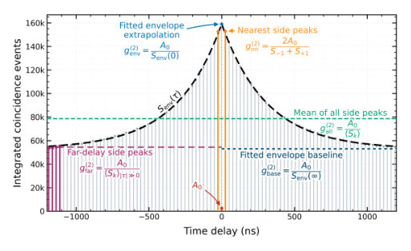
<figcaption class="paper-figure-caption"><b>Fig 1.</b> FIG. 1. Normalization methods for estimating g(2)(0) from a pulsed correlation histogram. The central peak area A0 is compared with different reference levels extracted from the side peaks according to Eqs. (2a-2e).</figcaption>
</figure>
<figure class="paper-figure-card">

<figcaption class="paper-figure-caption"><b>Fig 2.</b> FIG. 2. Correlation histograms. (a) Reference measurement of the initially non-blinking quantum dot emission, where a flat side peak envelope is obtained for long time delays. The inset displays the short-time pulsed correlation. A value of g(2)(0) = 0.0473 ± 0.0014 is extracted using Eq. (2a). (b) Artificial blinking generated by timestamp masking, applying an RTN waveform to the raw time-tagged photon streams. The imposed intermittency produces a pronounced rapidly decaying envelope in the side peak amplitudes with increasing delay, here shown for r = Poff/Pon = 5.3 and τb = 2.3 µs. (c) Experimentally induced blinking obtained by gating the excitation pulse train with an RTN waveform...</figcaption>
</figure>
<figure class="paper-figure-card">

<figcaption class="paper-figure-caption"><b>Fig 3.</b> FIG. 3. g(2)(0) estimators for random telegraph noise blinking as a function of the blinking strength Poff/Pon. The non- blinking reference value is shown by the black star and dashed horizontal line. Open markers correspond to post-processed RTN blinking, while filled markers show experimentally in- duced RTN blinking. The data points within the bracket deviate from the expected trend due to a different pulsed sup- pression. The envelope and baseline estimators, g(2) env and g(2) base, are obtained from the fit to the side peak envelope Senv(τ) given by Eq. (26) in the appendix.</figcaption>
</figure>
<figure class="paper-figure-card">

<figcaption class="paper-figure-caption"><b>Fig 4.</b> FIG. 4. g(2)(0) estimators for power law and dark state blink- ing generated by post-processed blinking, shown as a function of the blinking strength Poff/Pon. These models are defined in the appendix. The non-blinking reference value is indicated by the black star and dashed horizontal line.</figcaption>
</figure>
<figure class="paper-figure-card">

<figcaption class="paper-figure-caption"><b>Fig 5.</b> FIG. 5. g(2)(0) estimators for an inherently blinking quantum dot under phonon-assisted excitation. (a) Measured pulsed correlation histogram showing a pronounced bunching envelope due to blinking. The shaded region indicates the correlation window used for the estimator calculation, with the arrows marking the corresponding window width. (b) Extracted g(2)(0) estimator values as a function of the correlation window. The vertical dashed line corresponds to the window shown in panel (a). (c) Reduced χ2 for increasing correlation window for both the fit with random telegraph noise blinking and the dark state model.</figcaption>
</figure>
</div>

<p><strong>Summary.</strong> This paper tackles the challenge of measuring single-photon source quality (g^(2)(0)) when the emitters exhibit intensity fluctuations called 'blinking'. By comparing multiple mathematical estimators, the authors demonstrate that only model-based analysis correctly accounts for the slow blinking envelope. This provides a crucial, standardized benchmark for future quantum light source characterization.</p>
<p><strong>Why it may be interesting.</strong> This work is highly relevant to quantum optics and open quantum systems, as it provides a rigorous framework for extracting fundamental quantum properties (like antibunching) from noisy, fluctuating experimental data streams common in solid-state quantum emitters.</p>
<details>
<summary>Detailed structure</summary>
<p><strong>Main problem.</strong> The paper addresses the lack of a consistent methodology for analyzing the second-order auto-correlation function, g^(2)(0), of single-photon sources, particularly when the sources exhibit intensity fluctuations known as 'blinking'.</p>
<p><strong>Main result.</strong> The model-based estimator, which correctly accounts for the slow blinking envelope, provides the most accurate estimate of g^(2)(0), showing that simple normalization methods significantly overestimate the antibunching signature.</p>
<p><strong>Method.</strong> The authors compare five different estimators for g^(2)(0) by analyzing artificially induced blinking (via post-processing masking or laser gating) on a reference non-blinking quantum dot.</p>
<p><strong>Model / system.</strong> The system under study is semiconductor quantum dots (QDs) acting as single-photon emitters. The blinking process is modeled using stochastic processes like Random Telegraph Noise (RTN), Dark States (DS), and Powerlaw (PL) decay.</p>
<p><strong>Key observables.</strong> The primary observable is the zero-delay second-order correlation function, g^(2)(0). Other key diagnostics include the blinking autocorrelation function B(τ) and the blinking contrast r.</p>
<p><strong>Important parameters / regimes.</strong> The intermittency ratio r = P_off/P_on, the blinking timescale $\tau_b$, and the exponents $\alpha_{on/off}$ characterizing the blinking decay.</p>
<p><strong>Assumptions / limitations.</strong> The analysis often relies on separating the blinking dynamics from the intrinsic photon statistics, assuming the blinking process is statistically independent of the photon emission process.</p>
<p><strong>Figures summary.</strong> Figures compare the performance of various g^(2)(0) estimators against increasing blinking strength (e.g., for RTN), demonstrating the failure of simple estimators compared to the envelope-fitting method. They also compare model fits (RTN vs. DS) for inherently blinking QDs.</p>
<p><strong>Paper structure.</strong> The paper first establishes the problem of inconsistent g^(2)(0) measurement due to blinking. It then details the comparison of multiple estimators using controlled blinking (masking/gating) on a reference QD. Finally, it applies these rigorous methods to analyze an inherently blinking QD, comparing different underlying blinking models (RTN vs. DS).</p>
</details>
<details>
<summary>Abstract</summary>
<p>A variety of quantum emitters compete in the quest for the best single-photon source for photonic quantum technologies. Consequently, only a consistent approach to analyze the second-order auto correlation function allows comparison of the multi-photon contribution ($g^{(2)}(0)$) of different sources. However, the community employs different and inconsistent methods for blinking sources, leading to incomparable benchmarks of source quality. Here, we use the emission of an inherently non-blinking quantum dot (QD) and apply artificial blinking through two different mechanisms: masking the recorded raw data in post-processing and emulation of a blinking system by gating the laser excitation pulses. We then compare the $g^{(2)}(0)$ values with the non-blinking result. For the analysis, we investigate five estimators of $g^{(2)}(0)$ actively used in the literature. While fitting the envelope of the correlations on long-time scales with the correct blinking model is the best choice, normalizing to the Poisson level gives by far the worst proximity. Furthermore, we test our predictive model to identify the underlying blinking mechanism of a QD in a circular Bragg grating cavity.</p>
</details>
<p><sub><a href="#top">↑ back to top</a></sub></p>

<p><a id="paper-2609.27648"></a></p>
<h3 id="charge-and-spin-qubits-in-interacting-quantum-dots-coupled-to-rashba-active-leads"><a href="http://arxiv.org/abs/2609.27648v1">Charge and spin qubits in interacting quantum dots coupled to Rashba-active leads</a></h3>
<p><strong>Authors:</strong> Grazia Di Bello, Fabrizio Pavan, Mattia Trama, Roberta Citro, Giulio De Filippis, Carmine Antonio Perroni<br>
<strong>Type:</strong> theory · <strong>Category:</strong> quantum information and computing · <strong>PDF:</strong> <a href="https://arxiv.org/pdf/2609.27648v1">https://arxiv.org/pdf/2609.27648v1</a><br>
<strong>Analysis basis:</strong> full PDF text, analyzed in chunks
<strong>Topic relevance:</strong> 🔥 <code>methods for driven-dissipative</code> <strong>4/5</strong> · <code>Keldysh / 2PI / non-Gaussian methods</code> <strong>1/5</strong> · <code>analog quantum simulation</code> <strong>1/5</strong> · <code>correlated / nonlocal dissipation</code> <strong>1/5</strong> · <code>driven-dissipative phase transition</code> <strong>1/5</strong> · <code>quantum measurements</code> <strong>1/5</strong></p>
<div class="figure-strip-hint">↔ Scroll figures horizontally</div>
<div class="paper-figures-scroll">
<figure class="paper-figure-card">

<figcaption class="paper-figure-caption"><b>Fig 1.</b> FIG. 1. Schematic representation of the interacting quan- tum dot coupled to Rashba-active leads and of the spin- and charge-qubit encodings considered for repulsive and attractive interactions, respectively.</figcaption>
</figure>
<figure class="paper-figure-card">

<figcaption class="paper-figure-caption"><b>Fig 2.</b> FIG. 2. DMRG ground-state populations of the dot as a function of the gate energy ϵ (in units of T) for U = −0.5T and tso = 0. The three panels correspond to Mz/T = 0, 0.5, 1.0, where Mz quantifies the Zeeman term. The curves show the empty, singly occupied, and doubly occupied probabilities. The yellow vertical line marks the particle–hole symmetric point ϵ = −U/2.</figcaption>
</figure>
<figure class="paper-figure-card">

<figcaption class="paper-figure-caption"><b>Fig 3.</b> FIG. 3. Comparison between DMRG and Lindblad results for the stationary double-occupation probability p↑↓as a function of ϵ, for U = −0.5T, Mz = 0, and different values of tso. Panel (a) shows p↑↓: solid lines are Lindblad result and symbols are DMRG data. Panel (b) shows the difference ∆p↑↓= pDMRG ↑↓ − pLindblad ↑↓ for the same values of tso. The vertical line marks the particle–hole symmetric point ϵ = −U/2. The observed SOC dependence reflects the modified reservoir spectral structure and dot–lead hybridization.</figcaption>
</figure>
<figure class="paper-figure-card">

<figcaption class="paper-figure-caption"><b>Fig 4.</b> FIG. 4. Angular response to an in-plane magnetic field for U = −0.1T, ϵ = 0, Mz = 0, and M⊥= 0.2T. The magnetic field is applied to both the dot and the leads, whereas the Rashba axis remains fixed. Panel (a) shows 103[Etot(Θ) −Etot(0)], where Etot is the DMRG ground- state energy of the complete dot–lead system, while panel (b) shows 103[p↑↓(Θ) −p↑↓(0)]. Symbols are DMRG data. The dashed black curves are harmonic fits to the finite-SOC data, tso = 0.3T, performed on the absolute angular dependence and then shifted by subtracting the fitted value at Θ = 0. Panel (a) uses the leading harmonic, while panel (b) includes the first two harmonics (see Appendix E).</figcaption>
</figure>
<figure class="paper-figure-card">

<figcaption class="paper-figure-caption"><b>Fig 5.</b> FIG. 5. Spin-qubit dynamics for the parameter sets S1–S3 of Table V at fixed Rashba tunneling tso = 0.1T. The logical qubit is encoded in Hs = span{|↑⟩, |↓⟩} and is initialized in (|↑⟩+ |↓⟩)/ √</figcaption>
</figure>
</div>

<p><strong>Summary.</strong> This paper provides a unified theoretical framework for understanding charge and spin qubits in quantum dots coupled to Rashba leads. By combining Lindblad master equations with advanced MPS simulations, the authors analyze how spin-orbit coupling and interactions govern qubit coherence. The findings highlight that the energetic structure of leakage states and SOC-dependent coupling are critical factors determining qubit performance.</p>
<p><strong>Why it may be interesting.</strong> This work directly addresses the open quantum system dynamics crucial for quantum computing hardware, showing how realistic couplings (like SOC) dictate coherence times in solid-state qubits.</p>
<details>
<summary>Detailed structure</summary>
<p><strong>Main problem.</strong> The study unifies the investigation of charge and spin qubits encoded in a single interacting quantum dot coupled to leads exhibiting Rashba spin-orbit coupling.</p>
<p><strong>Main result.</strong> The paper shows that key ingredients for coherent spin and charge qubits, such as leakage state structure and SOC-dependent hybridization, can be captured even with a minimal Anderson-impurity description.</p>
<p><strong>Method.</strong> The authors combine a weak-coupling Lindblad master equation approach with nonperturbative Matrix-Product-State (MPS) simulations to analyze open-system dynamics.</p>
<p><strong>Model / system.</strong> The system is an interacting quantum dot modeled by an Anderson impurity Hamiltonian, coupled to Rashba fermionic leads. The analysis distinguishes between spin-qubit encoding (repulsive U) and charge-qubit encoding (attractive U).</p>
<p><strong>Key observables.</strong> Relaxation and decoherence rates (T1, T2), magnetic pair breaking, and Rashba-induced magnetic anisotropy.</p>
<p><strong>Important parameters / regimes.</strong> Interaction strength (U), magnetic field orientation, and Rashba SOC strength ($t_{so}$).</p>
<p><strong>Assumptions / limitations.</strong> The Lindblad approach assumes weak coupling and Markovian dynamics, which is benchmarked against the more rigorous MPS simulations.</p>
<p><strong>Figures summary.</strong> Figures illustrate the schematic coupling of the QD to leads and show the angular dependence of observables like total energy and double occupation probability.</p>
<p><strong>Paper structure.</strong> The paper first establishes the Hamiltonian and the qubit subspaces (spin vs. charge). It then compares results from weak-coupling (Lindblad) vs. nonperturbative (MPS) methods, analyzing equilibrium properties (anisotropy) and dynamic properties (decoherence rates $T_1, T_2$).</p>
</details>
<details>
<summary>Abstract</summary>
<p>We present a unified study of charge and spin qubits encoded in a single interacting quantum dot tunnel-coupled to Rashba fermionic leads. The dot is described by an Anderson impurity Hamiltonian with either repulsive or attractive local interactions and a magnetic field of arbitrary orientation. In the repulsive regime, a spin qubit is encoded in the singly occupied spin sector, whereas in the attractive regime, close to the degeneracy between the empty and doubly occupied configurations, these two states define a charge-qubit subspace. We combine a weak-coupling Lindblad master equation in the Markovian secular limit with numerically controlled matrix-product-state simulations of the full dot-reservoir system. In equilibrium, we identify magnetic pair breaking in the attractive regime and a weak Rashba-induced magnetic anisotropy when the magnetic field is rotated relative to the spin-orbit axis. In the dynamical regime, relaxation and decoherence are controlled by the energetic gap between the logical manifold and nearby leakage states, and are further enhanced by Rashba-dependent tunneling. These findings show that even a minimal Anderson-impurity description captures key ingredients for coherent spin and charge qubits: the energetic structure of leakage states and spin-orbit-dependent dot-lead hybridization.</p>
</details>
<p><sub><a href="#top">↑ back to top</a></sub></p>

<p><a id="paper-2609.27120"></a></p>
<h3 id="dual-boundary-condition-inference-a-two-boundary-product-rule-and-its-implications"><a href="http://arxiv.org/abs/2609.27120v1">Dual Boundary Condition Inference: A Two-Boundary Product Rule and Its Implications</a></h3>
<p><strong>Authors:</strong> Luis Razo, Eliahu Cohen<br>
<strong>Type:</strong> theory · <strong>Category:</strong> other · <strong>PDF:</strong> <a href="https://arxiv.org/pdf/2609.27120v1">https://arxiv.org/pdf/2609.27120v1</a><br>
<strong>Analysis basis:</strong> full PDF text, analyzed in chunks
<strong>Topic relevance:</strong> 🔥 <code>quantum measurements</code> <strong>4/5</strong> · <code>Keldysh / 2PI / non-Gaussian methods</code> <strong>2/5</strong> · <code>methods for driven-dissipative</code> <strong>2/5</strong></p>
<div class="figure-strip-hint">↔ Scroll figures horizontally</div>
<div class="paper-figures-scroll">
<figure class="paper-figure-card">

<figcaption class="paper-figure-caption"><b>Fig 1.</b> Low-resolution page preview, page 2</figcaption>
</figure>
<figure class="paper-figure-card">

<figcaption class="paper-figure-caption"><b>Fig 2.</b> Low-resolution page preview, page 3</figcaption>
</figure>
<figure class="paper-figure-card">

<figcaption class="paper-figure-caption"><b>Fig 3.</b> Low-resolution page preview, page 4</figcaption>
</figure>
<figure class="paper-figure-card">

<figcaption class="paper-figure-caption"><b>Fig 4.</b> Low-resolution page preview, page 5</figcaption>
</figure>
<figure class="paper-figure-card">

<figcaption class="paper-figure-caption"><b>Fig 5.</b> Low-resolution page preview, page 6</figcaption>
</figure>
</div>

<p><strong>Summary.</strong> This paper develops the Dual Boundary Condition Inference (DBCI) rule for combining two separate constraints on an outcome space. It shows this rule is mathematically equivalent to the Aharonov-Bergmann-Lebowitz rule in quantum mechanics. The work is significant because it classifies the combination rule and establishes a criterion to determine when one boundary constraint is redundant given the other.</p>
<p><strong>Why it may be interesting.</strong> It provides a rigorous framework for combining disparate pieces of information (like pre-selection and post-selection) into a single probability estimate, which has deep implications for interpreting quantum measurements.</p>
<details>
<summary>Detailed structure</summary>
<p><strong>Main problem.</strong> The paper addresses the formal problem of combining two independent constraints (a forward and a backward boundary) on an outcome space to infer a probability distribution.</p>
<p><strong>Main result.</strong> It introduces the Dual Boundary Condition Inference (DBCI) operator, which is shown to be equivalent to the Aharonov-Bergmann-Lebowitz (ABL) rule for rank-one intermediate projective measurements.</p>
<p><strong>Method.</strong> The authors use information-theoretic arguments (like maximum entropy and KL divergence minimization) alongside quantum mechanical formalism (Two-State Vector Formalism) to characterize the combination rule.</p>
<p><strong>Model / system.</strong> The model involves inferring a probability distribution $p(x)$ constrained by two boundary weights, $p_{fwd}(x)$ and $p_{bwd}(x)$, which can represent likelihoods or pre/post-selection information.</p>
<p><strong>Key observables.</strong> The inferred probability distribution $p_{DBCI}(x)$, the exponent $\lambda$ governing the combination, and the Reducibility Criterion.</p>
<p><strong>Important parameters / regimes.</strong> The exponent $\lambda$, which determines the specific combination rule (e.g., $\lambda=1$ for ABL, $\lambda=1/2$ for geometric mean).</p>
<p><strong>Assumptions / limitations.</strong> The analysis often restricts attention to the equal-exponent family of combination rules, and the quantum connection relies on rank-one intermediate projective measurements.</p>
<p><strong>Paper structure.</strong> The paper develops the DBCI operator, analyzes the mathematical requirements for the combination exponent $\lambda$ using three different physical/mathematical interpretations (quantum, information-theoretic, decision-theoretic), and concludes with the Two-Boundary Reducibility Criterion.</p>
</details>
<details>
<summary>Abstract</summary>
<p>Many inference problems are constrained from two sides: forward information and a second constraint on outcomes. Dual Boundary Condition Inference (DBCI) multiplies them and renormalises. The rule is not new: it is the product-of-experts form and the unit-exponent member of the logarithmic-pooling family. The paper contributes a classification and reducibility characterisation. The algebra does not fix the exponent at which the inputs combine: given the statistic log p_fwd + log p_bwd, which already builds in the product form, maximum entropy supplies the family (p_fwd p_bwd)^lambda and selects no member. If the inputs are read as two equally weighted opinions, three requirements select lambda = 1/2: unanimity preservation, consistency under a common Bayesian update, and minimal symmetric Kullback-Leibler divergence. If they are read as separately applied factors, two requirements select lambda = 1: a neutral second input must leave the first unchanged, and an update to one input must pass through unchanged. For a rank-one intermediate projective measurement, the Aharonov-Bergmann-Lebowitz (ABL) rule realises this form with no extra parameter. Every positive exponent orders outcomes identically, so the choice is invisible to picking the likeliest outcome, but not to scoring a class by total mass. Under the relevant identifications, the same product form gives Bayes' rule, while a final effect proportional to the identity returns the ordinary forward Born probabilities. The second result is a Two-Boundary Reducibility Criterion: DBCI factors through the forward boundary exactly when the effective backward boundary, up to positive rescaling, does. So a fixed prior or model-fixed structural constraint adds no distinctions between cases sharing the same forward boundary, though it may encode substantial information and still materially affect the result.</p>
</details>
<p><sub><a href="#top">↑ back to top</a></sub></p>

<p><a id="paper-2609.27705"></a></p>
<h3 id="multiscale-entropies-as-order-parameters-for-nonequilibrium-phase-transitions"><a href="http://arxiv.org/abs/2609.27705v1">Multiscale Entropies as Order Parameters for Nonequilibrium Phase Transitions</a></h3>
<p><strong>Authors:</strong> Gerhard Jung, Misaki Ozawa<br>
<strong>Type:</strong> theory · <strong>Category:</strong> statistical mechanics · <strong>PDF:</strong> <a href="https://arxiv.org/pdf/2609.27705v1">https://arxiv.org/pdf/2609.27705v1</a><br>
<strong>Analysis basis:</strong> full PDF text, analyzed in chunks
<strong>Topic relevance:</strong> 🔥 <code>non-equilibrium universality</code> <strong>4/5</strong> · <code>driven-dissipative phase transition</code> <strong>3/5</strong> · <code>Frenkel-Kontorova</code> <strong>1/5</strong></p>
<div class="figure-strip-hint">↔ Scroll figures horizontally</div>
<div class="paper-figures-scroll">
<figure class="paper-figure-card">

<figcaption class="paper-figure-caption"><b>Fig 1.</b> FIG. 2. Coarse-grained entropy SJ and susceptibility χ4 for the φ4 model for different control parameters β and different system sizes L. SJ has been shifted to account for different normalization. Lines are a guide for the eye.</figcaption>
</figure>
<figure class="paper-figure-card">

<figcaption class="paper-figure-caption"><b>Fig 2.</b> FIG. 1. Multiscale and conditional entropies per site in the φ4 model for different values of the control parameter β. (a) Comparison of the total entropy S0 obtained by thermody- namic integration (TI) of the microscopic model and by the wavelet conditional renormalization group (WCRG) model for different system sizes L = 4, 8, 16, 32, 64, 128. Snapshots show representative configurations at β = 0.3, 0.67, and 0.86 (same color code) for L = 128. (b) Conditional entropies Sj ex- tracted from the WCRG model at scales ranging from j = 1 to j = J = 7 for L = 128. (c) Multiscale entropies Sj for the same system as in panel (b).</figcaption>
</figure>
<figure class="paper-figure-card">

<figcaption class="paper-figure-caption"><b>Fig 3.</b> FIG. 3. The total entropy per site in the AMB+ for differ- ent mean fields Φ and L = 128. Snapshots show exemplary configurations at Φ = −0.9, −0.4, 0.1, 0.6 and 1.1 (same color code).</figcaption>
</figure>
<figure class="paper-figure-card">

<figcaption class="paper-figure-caption"><b>Fig 4.</b> FIG. 4. (a) Multiscale entropy in the AMB+ compared to the correlation length ξ for different mean fields Φ and L = 128. The black dotted line corresponds to ln ξ + const. (b) Snapshots show exemplary coarse-grained configurations at Φ = −0.4 and 0.6 for different scales j.</figcaption>
</figure>
<figure class="paper-figure-card">

<figcaption class="paper-figure-caption"><b>Fig 5.</b> FIG. 5. Conditional wavelet entropies Sj extracted for the AMB+ using the WCRG model at different scales j.</figcaption>
</figure>
</div>

<p><strong>Summary.</strong> This work introduces a multiscale entropy framework based on the Wavelet Conditional Renormalization Group to analyze phase transitions. By decomposing the total entropy across spatial scales, the authors demonstrate that these multiscale entropies act as robust order parameters. This technique successfully identifies critical points and characterizes spatial ordering in both equilibrium and complex nonequilibrium systems.</p>
<p><strong>Why it may be interesting.</strong> The concept of using entropy decomposition as a universal, scale-dependent order parameter is highly relevant for understanding critical phenomena and pattern formation in complex many-body systems, bridging statistical mechanics with information theory.</p>
<details>
<summary>Detailed structure</summary>
<p><strong>Main problem.</strong> To develop and apply a multiscale entropy framework to characterize phase transitions, particularly in complex nonequilibrium systems where traditional order parameters might fail.</p>
<p><strong>Main result.</strong> Multiscale entropies successfully reveal critical points and spatial organization in both equilibrium ($\phi^4$) and nonequilibrium (Active Model B+) systems, providing scale-dependent order parameters.</p>
<p><strong>Method.</strong> The core method is the Wavelet Conditional Renormalization Group (WCRG), which decomposes the total Shannon entropy into contributions from different spatial scales by learning conditional probability distributions.</p>
<p><strong>Model / system.</strong> The framework is applied to the equilibrium $\phi^4$ model and the nonequilibrium Active Model B+ (AMB+), as well as an opinion dynamics model. The method is designed to handle systems where the underlying probability distribution is unknown.</p>
<p><strong>Key observables.</strong> Multiscale Entropy ($S_j$), Conditional Entropy ($S_j$), Total Shannon Entropy ($S_0$), and comparison with susceptibility ($\chi$) and correlation length ($\xi$).</p>
<p><strong>Important parameters / regimes.</strong> Control parameters like $eta$ (for $\phi^4$) and $\epsilon_u$ (for opinion dynamics); the analysis focuses on the behavior across different spatial scales ($j$).</p>
<p><strong>Assumptions / limitations.</strong> The method relies on factorizing the probability distribution across scales and uses generative modeling (minimizing KL divergence) to estimate the necessary energy functions.</p>
<p><strong>Figures summary.</strong> Figures compare total entropy estimates from WCRG vs. Thermodynamic Integration (TI) for $\phi^4$; they show multiscale entropies peaking near critical points for $\phi^4$ and revealing asymmetry in AMB+ phase transitions.</p>
<p><strong>Paper structure.</strong> The paper introduces the WCRG framework for entropy decomposition, validates it on the $\phi^4$ model, and then applies it to more complex, non-equilibrium systems like AMB+ and opinion dynamics models to demonstrate its utility as a universal order parameter.</p>
</details>
<details>
<summary>Abstract</summary>
<p>We develop a multiscale entropy framework based on the wavelet conditional renormalization group that decomposes the total Shannon entropy into contributions from different spatial scales. Generative modeling enables accurate estimation of these entropies from configurations or snapshots, even in nonequilibrium systems whose underlying probability distributions are unknown. Applications to the equilibrium $\varphi^4$ model and nonequilibrium active Model B+ show that multiscale entropies reveal criticality and spatial organization obscured in the total entropy. These entropies serve as scale-dependent order parameters for characterizing phase transitions and pattern formation.</p>
</details>
<p><sub><a href="#top">↑ back to top</a></sub></p>

<p><a id="paper-2609.28050"></a></p>
<h3 id="theory-of-airy-beam-wavefront-sensing"><a href="http://arxiv.org/abs/2609.28050v1">Theory of Airy-Beam Wavefront Sensing</a></h3>
<p><strong>Authors:</strong> Surya Kamal<br>
<strong>Type:</strong> theory · <strong>Category:</strong> other · <strong>PDF:</strong> <a href="https://arxiv.org/pdf/2609.28050v1">https://arxiv.org/pdf/2609.28050v1</a><br>
<strong>Analysis basis:</strong> full PDF text, analyzed in chunks
<strong>Topic relevance:</strong> 🔥 <code>interference shaping light</code> <strong>4/5</strong> · <code>quantum measurements</code> <strong>3/5</strong> · <code>analog quantum simulation</code> <strong>1/5</strong></p>
<div class="figure-strip-hint">↔ Scroll figures horizontally</div>
<div class="paper-figures-scroll">
<figure class="paper-figure-card">

<figcaption class="paper-figure-caption"><b>Fig 1.</b> Fig. 1. Conceptual architecture of the proposed Airy-beam wavefront sensor. A Gaussian beam illuminates an aberrated exit pupil containing the optical phase structure of the system. An engineered cubic-phase element generates two coherent channels with opposite cubic phase. The corresponding Airy fields propagate to the Fourier plane, where they interfere and the resulting intensity is recorded for phase recovery.</figcaption>
</figure>
<figure class="paper-figure-card">

<figcaption class="paper-figure-caption"><b>Fig 2.</b> Fig. 2. Interference of the conjugate cubic-phase channels with- out and with exit-pupil aberrations. The aberrated case in- cludes −2 waves of defocus, 3 waves of astigmatism, and 10 waves of spherical aberration. A visible phase-shearing pat- tern appears in the interference phase in the presence of aber- rations.</figcaption>
</figure>
<figure class="paper-figure-card">

<figcaption class="paper-figure-caption"><b>Fig 3.</b> Fig. 3. Four-step interferometric phase retrieval in the Fourier plane for a wavefront containing 10λ spherical aberration, −2λ defocus, and 3λ astigmatism. Four intensity measure- ments are acquired with controlled relative phase shifts of 0, π/2, π, and 3π/2. These four phase-shifted measurements form the standard four-step phase-shifting interferometry scheme for recovering the relative phase through quadra- ture combinations [13]. The resulting quadratures provide the wrapped relative phase and the interference modulation used to define a valid reconstruction region.</figcaption>
</figure>
<figure class="paper-figure-card">

<figcaption class="paper-figure-caption"><b>Fig 4.</b> Fig. 5. Noise tolerance of the proposed wavefront sensor. Reconstruction error is evaluated as a function of additive measurement noise applied independently to the four phase- shifted interferograms.</figcaption>
</figure>
<figure class="paper-figure-card">

<figcaption class="paper-figure-caption"><b>Fig 5.</b> Fig. 4. Inverse aberration recovery. The measured four-step interferometric data are used in an inverse forward-model op- timization to recover the exit-pupil aberration coefficients. De- focus, astigmatism, and spherical aberration are recovered as −2.00000, 3.00000, and 9.99998 waves, respectively, compared with the true values of −2, 3, and 10 waves. The resulting exit-pupil phase is reconstructed with an RMS phase error of &lt; 10−6 rad, demonstrating accurate recovery of the imposed aberration.</figcaption>
</figure>
</div>

<p><strong>Summary.</strong> This paper presents a novel, compact wavefront sensing technique utilizing the interference of counter-accelerating Airy beams. By encoding the unknown exit-pupil aberration into the relative phase of the interference pattern, the method allows for highly accurate phase reconstruction. This eliminates bulky collection optics, making it ideal for integrating wavefront sensing into complex systems like electron-optical or AR/VR devices.</p>
<p><strong>Why it may be interesting.</strong> This work is highly relevant to quantum optics and open quantum systems because it proposes a compact, non-interferometric method for measuring complex phase structures (aberrations) that can be crucial for high-precision quantum state preparation or quantum sensing applications.</p>
<details>
<summary>Detailed structure</summary>
<p><strong>Main problem.</strong> To develop a wavefront sensing framework that accurately reconstructs unknown aberrations in an exit pupil without requiring conventional collection optics.</p>
<p><strong>Main result.</strong> The proposed method achieves accurate phase reconstruction with an RMS error below $10^{-6}$ rad, demonstrating high performance even in the presence of measurement noise.</p>
<p><strong>Method.</strong> The technique uses the interference pattern generated by two coherent Airy beams, derived from a single Gaussian beam via an engineered cubic phase function, and measures the resulting phase shift using a four-step phase-shifting interferometry scheme.</p>
<p><strong>Model / system.</strong> The system models the propagation of light through an aberrated exit pupil, encoding the aberration into the relative phase difference ($\Delta\psi$) measured in the Fourier plane via the interference of counter-accelerating Airy beams.</p>
<p><strong>Key observables.</strong> The resulting interference pattern intensity $I_\delta(r)$ and the wrapped relative phase $\Delta\psi_{	ext{wrap}}$ obtained from the four-step measurement.</p>
<p><strong>Important parameters / regimes.</strong> The aberration is parameterized by low-order coefficients (e.g., defocus, astigmatism, spherical aberration).</p>
<p><strong>Assumptions / limitations.</strong> The reconstruction relies on solving an inverse problem using the full wave-optical forward model, although a local relationship approximation is also discussed.</p>
<p><strong>Figures summary.</strong> Figures illustrate the conceptual architecture (Fig. 1), the phase-shearing pattern due to aberrations (Fig. 2), and the four-step phase-shifting interferometry scheme (Fig. 3).</p>
<p><strong>Paper structure.</strong> The paper introduces the physical setup using cubic phase elements to generate Airy beams, details the four-step phase measurement process, formulates the aberration recovery as an inverse problem, and presents numerical simulations validating the reconstruction accuracy and noise tolerance.</p>
</details>
<details>
<summary>Abstract</summary>
<p>A new wavefront sensing framework based on the interference of counter-accelerating Airy beams is presented. An engineered cubic phase function transforms a single Gaussian beam into two coherent Airy beams with opposite transverse accelerations, which self-recombine during free-space propagation to form an interference pattern encoding the aberrated incident wavefront. Numerical simulations demonstrate accurate recovery of the aberrated exit-pupil phase across the aberration sets considered, with a root-mean-square phase reconstruction error below $10^{-6} \mathrm{\;rad}$ for the aberration set shown and consistently low errors for the other sets, while maintaining accurate recovery in the presence of measurement noise. The approach eliminates collection optics and enables a compact wavefront-sensing architecture for applications where conventional interferometric systems are difficult to implement, including electron-optical systems, augmented and virtual reality systems.</p>
</details>
<p><sub><a href="#top">↑ back to top</a></sub></p>

<p><a id="paper-2609.26880"></a></p>
<h3 id="bosonic-error-correction-with-fluxonium"><a href="http://arxiv.org/abs/2609.26880v1">Bosonic Error Correction with Fluxonium</a></h3>
<p><strong>Authors:</strong> Shantanu R. Jha, Shoumik D. Chowdhury, Gabriele Rolleri, Anaida Ali, Lev-Arcady Sellem, Réouven Assouly, David Pahl, Lukas Pahl, Junyoung An, Farid Hassani, Hung-Yu Tsao, Chia-Chin Tsai, Aranya Goswami, Jeremie Boudreault, Jeffrey M. Gertler, Michael A. Gingras, Bethany M. Niedzielski, Jeffrey M. Knecht, Mollie E. Schwartz, Kyle Serniak, Jeffrey A. Grover, Baptiste Royer, Max Hays, William D. Oliver<br>
<strong>Type:</strong> experiment · <strong>Category:</strong> quantum information and computing · <strong>PDF:</strong> <a href="https://arxiv.org/pdf/2609.26880v1">https://arxiv.org/pdf/2609.26880v1</a><br>
<strong>Analysis basis:</strong> full PDF text, analyzed in chunks
<strong>Topic relevance:</strong> 🔥 <code>QC/QI experiment</code> <strong>4/5</strong> · <code>quantum measurements</code> <strong>2/5</strong> · <code>quantum optics experiment</code> <strong>1/5</strong></p>
<div class="figure-strip-hint">↔ Scroll figures horizontally</div>
<div class="paper-figures-scroll">
<figure class="paper-figure-card">

<figcaption class="paper-figure-caption"><b>Fig 1.</b> FIG. 1. Fluxonium-resonator device. (a) Schematic of the fluxonium-resonator system, with the flow of liquid rep- resenting errors entering and leaving the system. The error- correction protocol maps errors from the resonator (green) to the fluxonium (purple) at a controllable rate, represented by the middle tunable valve. The fluxonium is then reset at a controllable rate, represented by the leftmost valve, removing the errors from the system. Error correction thus acts as engi- neered dissipation that restores the system to the code space. (b) False-colored optical micrograph of the device, with the fluxonium and its flux line in purple, ASR in green, readout resonator stub in dark grey,...</figcaption>
</figure>
<figure class="paper-figure-card">

<figcaption class="paper-figure-caption"><b>Fig 2.</b> FIG. 3. GKP state preparation. (a) Circuit for prepar- ing an arbitrary fluxonium-resonator state using N rounds of single-qubit rotations and ECD gates; b is the batch index within the optimization. (b) Infidelity traces for a multi-start optimization of the preparation circuit for the |+yL⟩GKP state with size ∆= 0.438, N = 7 blocks, and regularization strength λ = 0.5. The minimum-loss parameter set (bold black line) does not coincide with the minimum-infidelity set (dashed black line), illustrating how regularization shapes the optimal circuit. (c) Characteristic functions of the prepared |+zL⟩, |−zL⟩, and |+yL⟩GKP states at ∆= 0.438.</figcaption>
</figure>
<figure class="paper-figure-card">

<figcaption class="paper-figure-caption"><b>Fig 3.</b> FIG. 4. Measurement-free GKP QEC. (a) Circuit for a single stabilizer round of measurement-free GKP error cor- rection, indexed by k, enabling cycling through X/Z stabiliz- ers along each cardinal direction in phase space. (b) Decay of the logical-state distinguishability 1</figcaption>
</figure>
</div>

<p><strong>Summary.</strong> This paper reports the first realization of bosonic quantum error correction in a fully planar superconducting circuit. By coupling a long-lived fluxonium qubit to a small, planar resonator, the authors successfully prepared GKP logical states and demonstrated error correction, extending the logical coherence time by a factor of 1.59.</p>
<p><strong>Why it may be interesting.</strong> This work directly addresses the hardware limitations of superconducting QEC by moving to a planar architecture and utilizing a high-coherence qubit (fluxonium) for error syndrome extraction.</p>
<details>
<summary>Detailed structure</summary>
<p><strong>Main problem.</strong> The primary goal is to achieve fault-tolerant quantum computation using bosonic quantum error correction (QEC) in a scalable hardware platform.</p>
<p><strong>Main result.</strong> The authors demonstrated the first standalone bosonic QEC in a fully planar superconducting circuit architecture, achieving a logical lifetime enhancement factor of $1.59 \pm 0.05$.</p>
<p><strong>Method.</strong> The technique involves preparing finite-energy Gottesman-Kitaev-Preskill (GKP) states and stabilizing them using measurement-free error correction implemented via rapid fluxonium reset.</p>
<p><strong>Model / system.</strong> The system uses a heavy fluxonium qubit coupled dispersively to an on-chip Archimedean spiral resonator (ASR). The control relies on the weak coupling regime and the fluxonium's long bit-flip lifetime.</p>
<p><strong>Key observables.</strong> Logical lifetimes ($T_C$), fluxonium excited-state population $P(e)$ vs. photon number ($ar{n}$), and Husimi Q-functions of the resonator state.</p>
<p><strong>Important parameters / regimes.</strong> Fluxonium bit-flip lifetime ($451 \pm 70 \mu s$), resonator quality factor ($Q = 2.65 	imes 10^6$), and the logical lifetime enhancement factor ($1.59 \pm 0.05$).</p>
<p><strong>Assumptions / limitations.</strong> The fluxonium is operated at the half-flux sweet spot ($\Phi_{	ext{ext}} = \Phi_0/2$) to minimize flux noise sensitivity, and the weak coupling regime is maintained.</p>
<p><strong>Figures summary.</strong> Figure 1 illustrates the error correction protocol mapping errors from the resonator to the fluxonium followed by reset. Figure 2 shows characterization of the ECD gate action via Q-functions and characteristic functions of cat states.</p>
<p><strong>Paper structure.</strong> The paper details the physical setup (fluxonium coupled to ASR), the implementation of necessary quantum control gates (ECD), the preparation of GKP states, and finally, the measurement and demonstration of the measurement-free error correction protocol.</p>
</details>
<details>
<summary>Abstract</summary>
<p>Bosonic quantum error correction (QEC) offers a hardware-efficient route to fault-tolerant quantum computing. To date, however, superconducting circuit implementations of bosonic codes have utilized centimeter-scale 3D microwave cavities controlled by fixed-frequency transmon qubits, with logical lifetimes limited by transmon bit-flip errors. Here, we realize bosonic QEC in a fully planar architecture by pairing a heavy fluxonium, whose $451 \pm 70~μ\mathrm{s}$ bit-flip lifetime exceeds that of any control qubit in previous demonstrations, with an on-chip Archimedean spiral resonator several orders of magnitude smaller in mode volume than prior 3D cavities. We prepare finite-energy Gottesman-Kitaev-Preskill (GKP) states and stabilize them using measurement-free error correction with rapid fluxonium reset, extending the logical lifetime by a factor of $1.59 \pm 0.05$. These results provide the first demonstration of resonator control using a weakly coupled fluxonium and, with it, the first realization of standalone bosonic QEC in a fully planar superconducting circuit architecture.</p>
</details>
<p><sub><a href="#top">↑ back to top</a></sub></p>

<p><a id="paper-2609.27456"></a></p>
<h3 id="precision-and-resource-scaling-of-real-time-flux-distortion-compensation-for-superconducting-quantum-control"><a href="http://arxiv.org/abs/2609.27456v1">Precision and resource scaling of real-time flux distortion compensation for superconducting quantum control</a></h3>
<p><strong>Authors:</strong> Qi Zhou, Zi-Hao Mei, Peng Duan, Peng Wang, Liang-Liang Guo, Hao-Ran Tao, Wei-Cheng Kong, Hui Yang, Guo-Ping Guo, Zhao-Yun Chen<br>
<strong>Type:</strong> experiment · <strong>Category:</strong> quantum information and computing · <strong>PDF:</strong> <a href="https://arxiv.org/pdf/2609.27456v1">https://arxiv.org/pdf/2609.27456v1</a><br>
<strong>Analysis basis:</strong> full PDF text, analyzed in chunks
<strong>Topic relevance:</strong> 🔥 <code>QC/QI experiment</code> <strong>4/5</strong> · <code>quantum measurements</code> <strong>1/5</strong></p>
<div class="figure-strip-hint">↔ Scroll figures horizontally</div>
<div class="paper-figures-scroll">
<figure class="paper-figure-card">

<figcaption class="paper-figure-caption"><b>Fig 1.</b> FIG. 1. Schematic comparison of distortion-compensation architectures. (a) Offline pre-distortion of complete waveforms before storage and playback. (b) Real-time inverse filtering after gate-level waveform synthesis. (c) Representative flux-line distortion sources in room-temperature electronics (top), the cryogenic transmission chain (middle), and processor interconnects (bottom).</figcaption>
</figure>
<figure class="paper-figure-card">

<figcaption class="paper-figure-caption"><b>Fig 2.</b> FIG. 2. Inverse-filter reconstruction and parallel filtering scheme. (a) FDI-TDF workflow from the measured step response s[n] to the reconstructed compensation impulse response g[n] and compact IIR/FIR model. (b) Three parallel second-order IIR sections (SOS) and a 44-tap FIR branch represent the long- and short-time components of the compensation response. (c) Logical structure of block look-ahead IIR filtering and (d) sliding-window FIR filtering, each producing six consecutive samples per FPGA clock within one channel. In (c), αij and βij denote the entries of A and B in equation (9), and D denotes a delay of one FPGA clock cycle.</figcaption>
</figure>
<figure class="paper-figure-card">

<figcaption class="paper-figure-caption"><b>Fig 3.</b> FIG. 3. Room-temperature step responses for a 500 µs-period square wave: uncompensated (gray dash-dotted), software pre-distorted (orange dashed), and FPGA compensated (blue solid). Each trace averages 1000 waveforms. (a) Microsecond- scale settling and (b) a nanosecond-scale view of the same rising edge. The FPGA configuration uses a fourth-order IIR branch and an FIR branch with 14 effective taps.</figcaption>
</figure>
<figure class="paper-figure-card">

<figcaption class="paper-figure-caption"><b>Fig 4.</b> FIG. 4. Cryogenic flux-line step responses measured with the qubit. Blue points are measurements and orange curves are fits; gray traces beneath each response show the fit residuals, with dashed reference lines at ±10−3. (a) Uncompensated; (b) software pre-distorted; (c), (d) FPGA compensated using fourth-order IIR filters at 35 and 44 bits, respectively. The 44-tap FIR branch uses 44-bit arithmetic.</figcaption>
</figure>
<figure class="paper-figure-card">

<figcaption class="paper-figure-caption"><b>Fig 5.</b> FIG. 5. Benchmarking results in the cycle Pauli fidelity convention. (a) XEB distributions for the software reference (40 rounds) and four IIR configurations (10 rounds each), labeled by order and word length. Boxes span the interquartile range; black lines mark medians. (b) Mean XEB fidelity (blue circles) and SPB-derived cycle metric (orange open squares) for the software reference and fourth-order configurations. Error bars are one sample standard deviation.</figcaption>
</figure>
</div>

<p><strong>Summary.</strong> This paper presents a novel, resource-efficient hardware method for compensating flux distortions in superconducting quantum processors. By using a Frequency-Domain Inversion and Time-Domain Fitting approach, the authors implement a hybrid IIR/FIR filter on an FPGA. This technique maintains high gate fidelity (near 99.57%) while showing only logarithmic growth in hardware resource use as the required compensation timescale increases.</p>
<p><strong>Why it may be interesting.</strong> This work directly tackles a major experimental bottleneck in superconducting quantum computing—control fidelity—by providing a resource-efficient, scalable hardware solution for real-time pulse shaping.</p>
<details>
<summary>Detailed structure</summary>
<p><strong>Main problem.</strong> The paper addresses the critical challenge of maintaining high gate fidelity in superconducting quantum processors by compensating for long-lived distortions in the flux-control lines during dynamic quantum circuits.</p>
<p><strong>Main result.</strong> The proposed real-time IIR filtering technique successfully achieved a median controlled-Z Pauli fidelity close to the software-reference value of 99.57%, demonstrating a scalable hardware foundation for high-fidelity flux control.</p>
<p><strong>Method.</strong> A Frequency-Domain Inversion and Time-Domain Fitting (FDI-TDF) method is used to reconstruct the compensation filter, which is then implemented using a compact hybrid Infinite Impulse Response (IIR) and Finite Impulse Response (FIR) structure.</p>
<p><strong>Model / system.</strong> The system is a superconducting quantum processor controlled via flux-control lines, modeled as a Linear Time-Invariant (LTI) system. The compensation is implemented on an FPGA, operating at 1.2 GSa/s.</p>
<p><strong>Key observables.</strong> Two-qubit cross-entropy benchmarking (XEB) controlled-Z Pauli fidelity; hardware resource use (LUT and DSP) vs. compensation timescale.</p>
<p><strong>Important parameters / regimes.</strong> Sampling rates up to 1.2 GSa/s; resource scaling showing only ~14% increase in LUT use when extending compensation from microsecond to hundred-microsecond timescales.</p>
<p><strong>Assumptions / limitations.</strong> The method assumes the flux-line response can be accurately modeled and inverted using the FDI-TDF approach, avoiding the limitations of pre-determined pulse sequences.</p>
<p><strong>Figures summary.</strong> Figures compare different compensation architectures (offline vs. real-time inverse filtering) and show the step responses achieved by the FPGA compensation method relative to software pre-distortion.</p>
<p><strong>Paper structure.</strong> The paper details the physical problem (flux distortion), introduces the FDI-TDF algorithm (involving frequency-domain inversion and time-domain fitting to a hybrid IIR/FIR model), presents the hardware implementation details (parallelization on FPGA), and validates the results using fidelity benchmarking and resource scaling analysis.</p>
</details>
<details>
<summary>Abstract</summary>
<p>Real-time waveform generation supports dynamic quantum circuits without pre-storing complete waveforms for every execution path. However, long-lived distortions in flux-control lines degrade gate fidelity, requiring compensation to account for the actual pulse history. A frequency-domain inversion and time-domain fitting method is proposed for resource-efficient real-time flux distortion compensation. The method fits the reconstructed compensation impulse response with a compact hybrid infinite impulse response (IIR) and finite impulse response (FIR) filter. Look-ahead parallelization enables this filter to process synthesized waveforms at 1.2GSa/s on a field-programmable gate array (FPGA). Two-qubit cross-entropy benchmarking shows that real-time IIR filtering achieves a median controlled-Z Pauli fidelity close to the software-reference value of 99.57%. Numerical analysis and FPGA synthesis indicate approximately logarithmic growth in hardware resource use with compensation timescale. Extending compensation from microsecond to hundred-microsecond timescales increases look-up table (LUT) and digital signal processing (DSP) resource use by only about 14% and 4%, respectively, while maintaining a relative arithmetic error below $10^{-4}$. This work provides a scalable hardware foundation for high-fidelity flux control in dynamic superconducting quantum circuits.</p>
</details>
<p><sub><a href="#top">↑ back to top</a></sub></p>

<p><a id="paper-2609.26958"></a></p>
<h3 id="soft-decoding-for-quantum-ldpc-codes-with-experimental-validation"><a href="http://arxiv.org/abs/2609.26958v1">Soft decoding for quantum LDPC codes with experimental validation</a></h3>
<p><strong>Authors:</strong> Arda Aydin, Edwin Tham, Nicolas Delfosse, Min Ye<br>
<strong>Type:</strong> both · <strong>Category:</strong> quantum information and computing · <strong>PDF:</strong> <a href="https://arxiv.org/pdf/2609.26958v1">https://arxiv.org/pdf/2609.26958v1</a><br>
<strong>Analysis basis:</strong> full PDF text, analyzed in chunks
<strong>Topic relevance:</strong> 🔥 <code>QC/QI experiment</code> <strong>4/5</strong> · <code>quantum measurements</code> <strong>1/5</strong></p>
<div class="figure-strip-hint">↔ Scroll figures horizontally</div>
<div class="paper-figures-scroll">
<figure class="paper-figure-card">

<figcaption class="paper-figure-caption"><b>Fig 1.</b> FIG. 1. Comparison of iteration-cutoff post-selection with the no-post-selection baseline for BB90 and BB144 at (left) p = 10−3</figcaption>
</figure>
<figure class="paper-figure-card">

<figcaption class="paper-figure-caption"><b>Fig 2.</b> FIG. 2. Comparison of the iteration-cutoff rule, the hybrid rule, and 2R-LEC at p = 10−3 for (left) Q70 and (right) Q102. The thresholds Mlow and Mhigh and the fraction fmid are defined in Sec. II.</figcaption>
</figure>
<figure class="paper-figure-card">

<figcaption class="paper-figure-caption"><b>Fig 3.</b> FIG. 3. Logical bit error rate versus restart rate for the (w = 5, c = 3) soft sliding-window decoder applied to EDM-4 at p = 10−3 for (left) Q54 and (right) Q70. Each curve plots the tradeoff obtained by varying the iteration cutoff Mcut.</figcaption>
</figure>
<figure class="paper-figure-card">

<figcaption class="paper-figure-caption"><b>Fig 4.</b> FIG. 4. Overall logical lifetime TN versus mean rejection rate per syndrome round under iteration-cutoff post-selection for the experimental (left) BB5 and (right) GB4 memory data. Each point corresponds to a different value of Mcut. Vertical error bars denote 95% confidence intervals from the lifetime fits. The dashed line and gray band mark the measured physical-qubit lifetime, 3.84 ± 0.48 s.</figcaption>
</figure>
</div>

<p><strong>Summary.</strong> This paper presents a novel soft beam search decoder for quantum LDPC codes, which uses the internal computational effort (BP iterations) as a confidence score. By implementing smart post-selection rules based on this score, the authors achieve substantial improvements in logical error suppression and demonstrate that these techniques can push trapped-ion quantum memories into the beyond-breakeven regime.</p>
<p><strong>Why it may be interesting.</strong> The development of soft decoding methods that leverage internal decoder statistics (like BP iterations) to guide post-selection is highly relevant for improving fault-tolerance in physical quantum hardware.</p>
<details>
<summary>Detailed structure</summary>
<p><strong>Main problem.</strong> The paper addresses the critical need to improve the logical performance of quantum error correction (QEC) by developing advanced decoding techniques.</p>
<p><strong>Main result.</strong> The proposed soft beam search decoder significantly enhances logical error suppression (up to $580	imes$) and doubles logical qubit lifetimes in trapped-ion memory experiments, pushing codes into the beyond-breakeven regime.</p>
<p><strong>Method.</strong> A soft beam search decoder is introduced that uses the cumulative number of Belief Propagation (BP) iterations as a computationally cheap confidence metric for post-selection.</p>
<p><strong>Model / system.</strong> The work focuses on Quantum Low-Density Parity-Check (qLDPC) codes, which are simulated for superconducting and trapped ion architectures. It also analyzes error detection measurements (EDMs) relevant to the walking cat architecture.</p>
<p><strong>Key observables.</strong> Logical Error Suppression factor, Logical Qubit Lifetime ($T_N$), Rejection Rate, and Mean BP Iterations.</p>
<p><strong>Important parameters / regimes.</strong> Physical error rate ($10^{-3}$), rejection rate (e.g., 2.6%–5.6%), and tunable thresholds ($M_{cut}, M_{low}, M_{high}$).</p>
<p><strong>Assumptions / limitations.</strong> The confidence metric relies on the cumulative BP iteration count, which is assumed to be a reliable proxy for decoding confidence.</p>
<p><strong>Figures summary.</strong> Figures compare LER suppression factors using different decoding rules (Hybrid vs. Cutoff) and plot the overall logical lifetime ($T_N$) versus the mean rejection rate for experimental memory data.</p>
<p><strong>Paper structure.</strong> The paper introduces the soft beam search decoder, details its application via various post-selection rules (Iteration-Cutoff, Hybrid Rule), benchmarks performance on simulated qLDPC codes, and concludes by applying the method to analyze trapped-ion memory experiments.</p>
</details>
<details>
<summary>Abstract</summary>
<p>The decoder is a critical component of a fault-tolerant quantum computer, computing corrections based on parity-check measurements performed throughout the computation. A soft decoder supplements its output with a confidence score which, when used alongside post-selection, can substantially improve logical performance. We introduce a soft beam search decoder for quantum low-density parity-check codes that uses internal decoder data as a confidence metric, removing the need for extra computation. We perform circuit-level simulations of five quantum LDPC codes relevant for superconducting and trapped ion architectures equipped with our global soft decoder and we obtain up to $580\times$ logical-error suppression at a physical error rate of $10^{-3}$ while rejecting only $0.1\%$ of shots. Then, we simulate an error detected measurement, which is a core logical operation of the walking cat architecture, using a streaming version of soft beam decoder and we achieve up to $210\times$ error suppression while increasing the rejection probability by only $0.5$ percentage points. Finally, we revisit recent quantum LDPC code memory experiments on trapped ions, demonstrating that our soft decoder doubles the logical qubit lifetimes at the price of a mean rejection rate of $2.6\%$--$5.6\%$ per syndrome round, bringing all five codes into the beyond-breakeven regime.</p>
</details>
<p><sub><a href="#top">↑ back to top</a></sub></p>

<p><a id="paper-2609.27992"></a></p>
<h3 id="a-proof-of-shors-orthogonal-measurement-conjecture-and-the-structure-of-information-optimal-quantum-measurements"><a href="http://arxiv.org/abs/2609.27992v1">A Proof of Shor's Orthogonal-Measurement Conjecture and the Structure of Information-Optimal Quantum Measurements</a></h3>
<p><strong>Authors:</strong> Jinbo Wang, Qihang Wang, Kun Chen<br>
<strong>Type:</strong> theory · <strong>Category:</strong> quantum information and computing · <strong>PDF:</strong> <a href="https://arxiv.org/pdf/2609.27992v1">https://arxiv.org/pdf/2609.27992v1</a><br>
<strong>Analysis basis:</strong> full PDF text, analyzed in chunks
<strong>Topic relevance:</strong> 🔥 <code>quantum measurements</code> <strong>4/5</strong></p>
<div class="figure-strip-hint">↔ Scroll figures horizontally</div>
<div class="paper-figures-scroll">
<figure class="paper-figure-card">

<figcaption class="paper-figure-caption"><b>Fig 1.</b> FIG. 1. Performance of the posterior-spectral receiver on 408 faithful binary mixed-state stress instances. (a) Fraction of instances whose information regret is below a target ϵ. (b) Fraction solved to ϵ ≤10−6 nat within a given time budget. Higher and further left are better. The posterior-spectral curve uses its certified affine upper-minus-PVM gap. The other curves use empirical regret relative to the posterior-spectral PVM.</figcaption>
</figure>
</div>

<p><strong>Summary.</strong> This paper develops a rigorous mathematical framework to find the measurement that extracts the maximum classical information from a quantum state ensemble. It introduces the 'posterior algebra' and proves that optimal measurements correspond to this algebra being commutative. The work successfully proves Shor's conjecture for binary ensembles and provides a highly robust, certified receiver design method.</p>
<p><strong>Why it may be interesting.</strong> This work provides a deep structural understanding of measurement optimization in quantum information, linking it to algebraic properties (commutativity) which is a powerful theoretical tool applicable across quantum physics.</p>
<details>
<summary>Detailed structure</summary>
<p><strong>Main problem.</strong> The central problem is determining the optimal quantum measurement (POVM) that maximizes the mutual information extracted from a given ensemble of quantum states.</p>
<p><strong>Main result.</strong> The authors prove Shor's finite-dimensional binary orthogonal-measurement conjecture and establish that the optimal measurement structure is governed by the commutativity of a newly defined 'posterior algebra'.</p>
<p><strong>Method.</strong> They introduce the posterior algebra and an affine information bound, showing that the maximum accessible information equals this bound if and only if the posterior algebra is abelian.</p>
<p><strong>Model / system.</strong> The analysis focuses on a finite ensemble $E = \{(p_i, 
ho_i)\}_{i=1}^m$ of quantum states, and the measurement is described by a POVM $\{M_y\}_y$. The framework is general but has specific proofs for binary ensembles.</p>
<p><strong>Key observables.</strong> Accessible Information $I(E, M)$, the affine information bound $U_{	ext{aff}}$, and the information regret $\epsilon_M = U_{	ext{aff}} - I(E, M)$.</p>
<p><strong>Important parameters / regimes.</strong> The ensemble must be 'faithful' (full rank $    au$), and the analysis is particularly detailed for binary ensembles.</p>
<p><strong>Assumptions / limitations.</strong> The framework relies on the ensemble being faithful; the proof for Shor's conjecture is restricted to the binary case.</p>
<p><strong>Figures summary.</strong> Figures compare the performance of the proposed posterior-spectral receiver against other methods across 408 mixed-state instances, showing superior success rates and performance.</p>
<p><strong>Paper structure.</strong> The paper builds from defining the information maximization problem to introducing the posterior algebra, proving the equivalence between information optimality and algebra commutativity, and finally developing a robust, certified posterior-spectral receiver.</p>
</details>
<details>
<summary>Abstract</summary>
<p>Which quantum measurement extracts the most classical information from an ensemble? We introduce the posterior algebra, a new canonical operator algebra selected by mutual information. For faithful ensembles, an affine information bound is exact precisely when this algebra is commutative; its joint spectral measurement is then optimal, and every optimal finite POVM refines it. Binary ensembles have one generator; compactness covers singular states, giving a proof of Shor's finite-dimensional binary orthogonal-measurement conjecture. The framework also gives rigidity bounds and a certified posterior-spectral receiver, validated on 408 mixed-state instances.</p>
</details>
<p><sub><a href="#top">↑ back to top</a></sub></p>
<hr>
<p>
<a href="index.html">← Index</a>
 · <a href="papers_02.html">Next →</a>
</p>
<hr>

</body>
</html>
